14 Balanced and Unbalanced Designs over Two Groups
Biomedical Engineering
Applied Statistics
The previous two chapters introduced inferential statistical methods for outcomes collected either on two occasions from the same group or from two distinct groups. Both parametric and non-parametric tests were presented, with particular emphasis on the two types of error inherent to inferential statistics, as well as on the strategies to mitigate them.
NoteThis chapter…
… extends those inferential techniques to situations in which generalization involves more than two conditions, combining different groups of subjects and/or multiple assessments within each group.
14.1 Factors and Levels
As the number of conditions in a study increases, it becomes essential to classify them according to their role. A key distinction is between the response variable and the predictors—also referred to as independent variables or factors.
Response Variables
Also known as dependent variables, response variables cannot be controlled or manipulated by the experimenter; they can only be observed or measured. Response variables represent the outcome of interest. For example, in a study assessing the effect of visual input and alcohol intake on balance, the magnitude of postural sway may serve as the response variable. By examining how this variable responds to experimentally manipulated conditions (i.e., factors), it is possible to infer cause-and-effect relationships.
Factors
Factors, or independent variables, are variables that can be systematically manipulated by the experimenter with the expectation of influencing the response variable. Factors take on a finite number of values, known as levels. These may be categorical (e.g., types of orthoses) or continuous (e.g., drug dosage).
NoteResponse variables as factors
A variable treated as a response in one study may be considered a factor in another. For instance, muscle response to perturbations could be measured across different walking speeds in one study, whereas another study might investigate the effect of orthotic devices on walking speed.
EXERCISE - Identify factor and levels
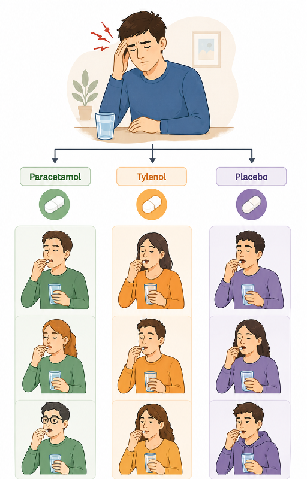
Considering a study designed to test how quickly different medicines, Paracetamol, Tylenol, and Placebo, relieves from headache, define:
- The response variable
- The factor
- The levels of the factor
Applied Examples
Two examples involving designs with more than two conditions are presented below.
Cabral and colleagues [1] investigated the time course of mechanical and electrophysiological properties of the biceps brachii muscle following induced damage. The amplitude distribution of compound action potentials1 was measured at five time points: baseline, and one, two, three, and four days post-exercise. The response variable was the centroid of the amplitude distribution, while time since damage was the factor, with five levels.
In a second study, Yanguang and colleagues [2] employed a mixed design with two factors. The authors examined whether High-Intensity Interval Training2 (HIIT) provides greater physical and psychological benefits than Moderate-Intensity Continuous Training3 (MICT) in individuals with substance use disorders over a 12-month period. Results indicated that both interventions improved health outcomes; however, HIIT led to greater improvements in physical measures such as grip strength and balance, and more substantial reductions in subjective drug cravings.
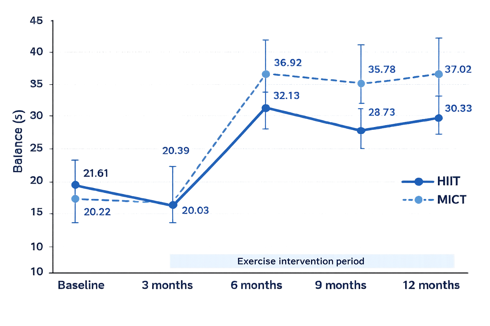
This figure, from the study of Yanguang et al [2], illustrates the time during which subjects were able to stand on a single leg with eyes closed.
How many factors do you see in the figure?
How many levels, in total (including all factors), do you see?
This is a two-way layout, mixing repeated measures with groups.
There are two factors: time (5 levels, baseline and every three months) and groups (2 levels, HIIT and MICT)
14.2 Multiple Comparisons
When faced with three or more conditions, a common initial approach is to perform multiple inferential tests across all possible pairs of groups.
To illustrate this approach, consider a study designed to assess the effect of different interventions on walking performance. A standard measure of gait performance is the distance covered during a six-minute walk test (Figure 14.1). Walking distance is therefore the response variable.
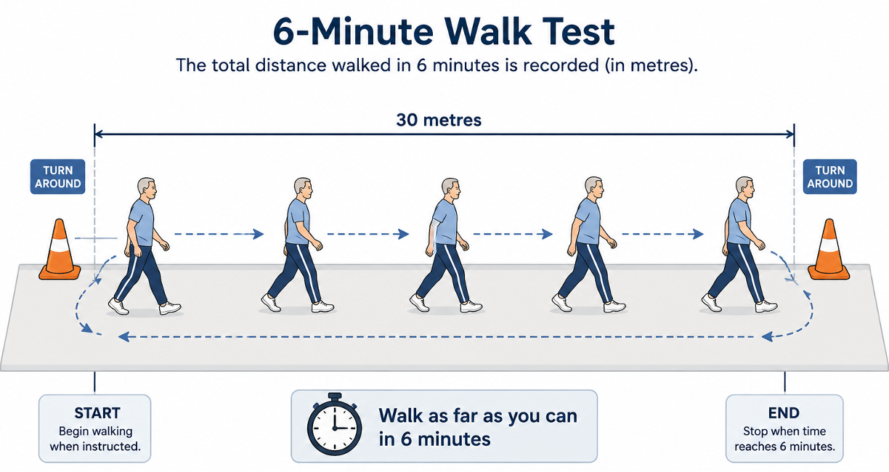
Walking distances were measured for three groups of subjects matched for age, anthropometric characteristics, and baseline walking ability. Each group received a different treatment—standard physiotherapy, balance training, or strength training. This study therefore includes one factor (intervention) with three levels.
Individual data for \(n=10\) subjects per group are summarized in Table 14.1 and Figure 14.2.
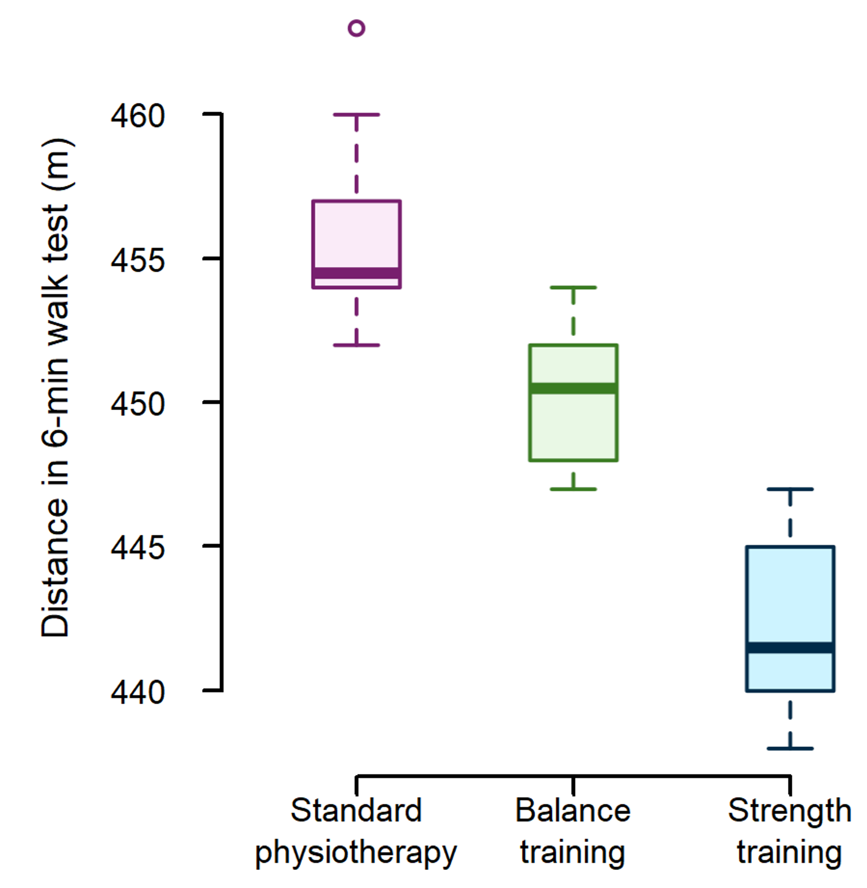
The goal is to determine which treatment leads to the greatest improvement in walking performance, as measured by distance covered in the 6-minute walk test.
Assuming the groups are independent and observations are Normally distributed, one might consider performing separate \(t\)-tests for all pairwise comparisons. With three levels, there are \(\binom{3}{2} = 3\) possible comparisons:
- Standard Physiotherapy \(\times\) Balance Training
- Standard Physiotherapy \(\times\) Strength Training
- Balance Training \(\times\) Strength Training
However, this approach leads to an important issue: inflation of the Type I error rate, as introduced in Section 12.6.1 and discussed below.
Family-Wise Error Rate (\(\alpha^*\))
In a \(t\)-test, rejection of the null hypothesis \(H_0\) is based on the probability of observing a test statistic at least as extreme as the one obtained, assuming \(H_0\) is true. If this probability is less than the significance level \(\alpha\)—typically 0.05—the null hypothesis is rejected.
Because statistical inference is probabilistic, there is always a chance that an observed effect is due to random variation rather than a true underlying effect. Rejecting \(H_0\) in such cases constitutes a Type I error. The significance level \(\alpha\) controls the probability of this error for a single test.
When multiple tests are conducted, the probability of committing at least one Type I error increases. This probability is known as the Family-Wise Error Rate (FWER), denoted \(\alpha^*\).
For each comparison, we can define a binary outcome: either a Type I error is committed or not. Under the null hypothesis, the probability of committing a Type I error in a single test is \(\pi = \alpha\).
Let \(X\) be the random variable representing the number of Type I errors across \(n_c\) independent comparisons. Then,
\[ X \sim B(n_c, \alpha) \]
The probability of committing at least one Type I error is:
\[ P(X \ge 1) = 1 - P(X = 0) \]
Using the Binomial probability mass function (Equation 11.6),
\[ P(X = 0) = (1 - \alpha)^{n_c} \]
Therefore, the Family-Wise Error Rate is:
\[ \alpha^* = P(X \ge 1) = 1 - (1 - \alpha)^{n_c} \tag{14.1}\]
Thus, performing multiple comparisons increases the likelihood of incorrectly rejecting at least one true null hypothesis.
NoteFWER \(\ge \alpha\)
The expression above assumes independence between comparisons. When tests are positively correlated—as is often the case in practice—the true Family-Wise Error Rate is typically lower than this value, though still larger than \(\alpha\). Thus, this formula should be interpreted as an approximation that highlights the inflation of Type I error under multiple testing.
Importantp-hacking
Conducting multiple comparisons without proper correction increases the risk of falsely detecting effects that do not exist. This practice—often referred to as p-hacking—is discouraged in sound scientific research.
Inferential analyses should be guided by pre-specified hypotheses grounded in strong theoretical or empirical justification.
14.3 One-Way Analysis of Variance for Independent Groups
Figure 14.2 reports the walking distance measured for three groups of patients during a 6-minute walk test. This figure suggests a systematic difference between groups. The question addressed by inferential statistics is whether the observed differences between group means are statistically significant or whether they may be explained by chance. The Analysis of Variance (ANOVA) addresses this question.
Two sources of variability explain the variation in the data shown in Figure 14.2. There is between-group variability, associated here with the treatment effect, and within-group variability, associated with inter-individual differences.
ANOVA assesses differences between group means by partitioning the total variability in the data. The simplest ANOVA arrangement includes one factor with three or more levels. Designs with a single factor are often called one-way designs or one-way layouts.
Before describing the procedure for statistical inference, it is important to clarify notation and assumptions.
Notation and Assumptions
In a balanced one-way design, there are \(I\) groups (factor levels), each with \(J\) observations.
For the 6-minute walk distance example:
\[ I = 3 \quad J = 10 \]
The following quantities (see Figure 14.3) are included in the one-way ANOVA model:
- \(Y_{ij}\) denotes the \(j\)-th observation in the \(i\)-th treatment group.
- \(\mu\) is the grand (overall) mean, computed over the \(I \times J\) observations.
- \(\alpha_i\) denotes the effect of treatment \(i\) relative to \(\mu\).
- \(\varepsilon_{ij}\) corresponds to the residual associated with the \(j\)-th observation in the \(i\)-th group.
The residuals \(\varepsilon_{ij}\), which correspond to random errors, are assumed to be independent and Normally distributed, with mean zero and variance \(\sigma^2\):
\[ \varepsilon_{ij} \sim \mathcal{N}(0,\sigma^2) \]
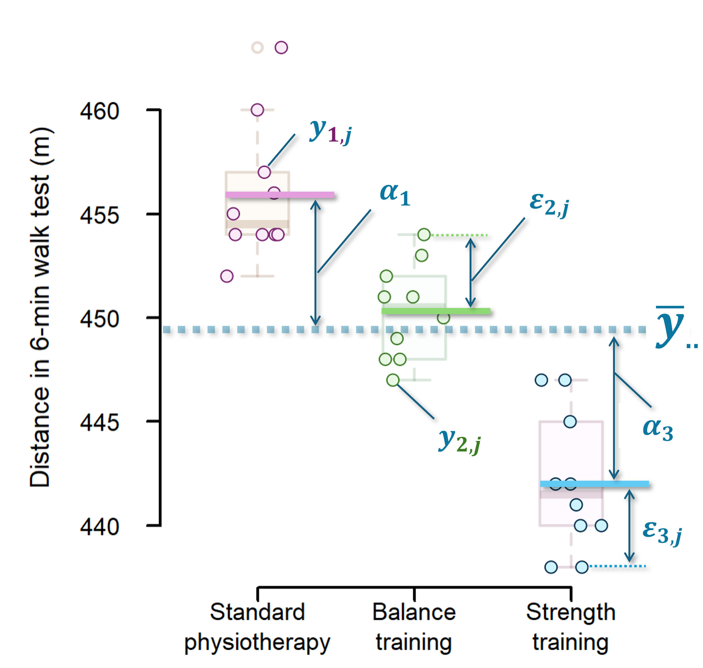
The Model and the Definition of \(H_0\)
The one-way design model states that observations are, on average, determined by the grand mean \(\mu\) and the group effect \(\alpha_i\):
\[ Y_{ij} = \mu + \alpha_i + \varepsilon_{ij} \tag{14.2}\]
Given the assumption on \(\varepsilon_{ij}\), the expected value in the \(i\)-th group is:
\[ E\left(Y_{ij}\right) = \mu + \alpha_i \]
If there is no group effect, all group means are equal and there is no differential effect \(\alpha_i\). The null hypothesis can therefore be written as:
\[ H_0: \alpha_i = 0, \quad i = 1,\ldots,I \tag{14.3}\]
The Sum of Squares
ANOVA is based on the partition of the total variability. For the one-way design, three sums of squares are defined.
The first is the total sum of squares \(SS_{\text{tot}}\): \[ SS_{\text{tot}} = \sum_{i=1}^I\sum_{j=1}^J \left(Y_{ij}-\overline{Y}\right)^2 \]
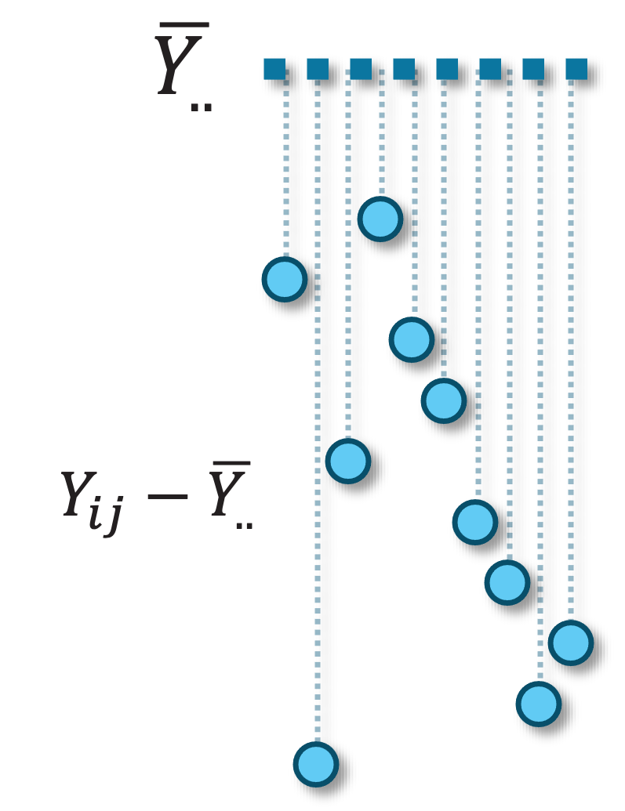
where \(\overline{Y}\) is the grand mean.
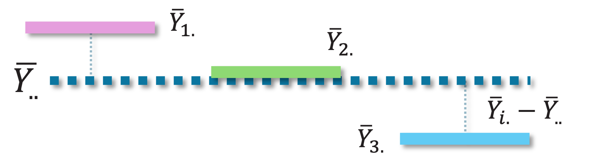
The second is the sum of squares between groups \(SS_{\text{B}}\):\[ SS_{\text{B}} = \sum_{i=1}^I\sum_{j=1}^J \left(\overline{Y}_i-\overline{Y}\right)^2 \]
Since \(\overline{Y}_i\) does not depend on \(j\), this simplifies to:
\[ SS_{\text{B}} = J\sum_{i=1}^I \left(\overline{Y}_i-\overline{Y}\right)^2 \]
The third is the sum of squares within groups \(SS_{\text{W}}\):
\[ SS_{\text{W}} = \sum_{i=i}^I\sum_{j=1}^J \left(Y_{ij}-\overline{Y}_i\right)^2 \]
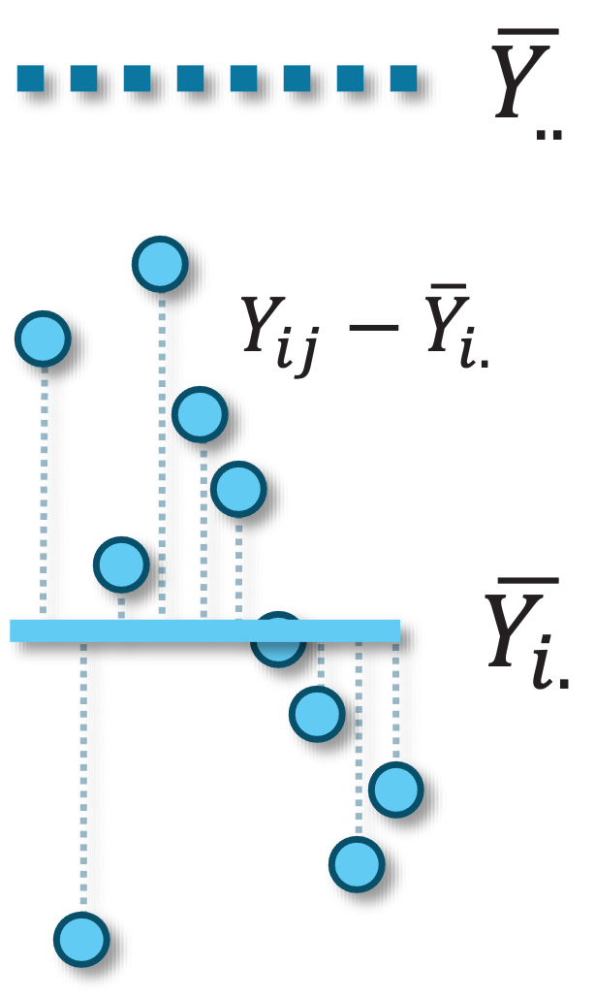
The Analysis of Variance is based on the following identity:
\[ \sum_{i=i}^I\sum_{j=1}^J \left(Y_{i,j}-\overline{Y}\right)^2 = J\sum_{i=i}^I \left(\overline{Y}_i-\overline{Y}\right)^2 + \sum_{i=i}^I\sum_{j=1}^J \left(Y_{i,j}-\overline{Y}_i\right)^2 \\ \]
For the one-way design with independent groups, this identity is often known expressed as:
\[ SS_\text{tot} = SS_\text{B}+SS_\text{W} \tag{14.4}\]
The sum of squared departures of all individuals observations with respect to the grand mean is given by the sum of two terms:
- the sum of square of the difference between group means and the grand mean.
- the sum of square of the error term, measuring departures of individual observations with respect to the group mean.
In other words, the total variability in the data is given by the sum of the group effect (e.g., treatment effect \(SS_{\text{B}}\)) and of the random variation within groups (\(SS_{\text{W}}\)).
Note 14.1: Proving the sum of squares identity
Starting from the total sum of squares,
\[ \sum_{i=1}^{I}\sum_{j=1}^{J} \left(Y_{ij} - \overline{Y}\right)^2 \]
we add and subtract the group mean \(\bar{Y}_{i.}\) inside the parentheses:
\[ Y_{ij} - \overline{Y} = \left(\overline{Y}_i - \overline{Y}\right) + \left(Y_{ij} - \overline{Y}_i\right) \]
Substituting this into the total sum of squares gives
\[ \sum_{i=1}^{I}\sum_{j=1}^{J} \left[\left(\overline{Y}_i - \overline{Y}\right) + \left(Y_{ij} - \overline{Y}_i\right) \right]^2 \]
Expanding the squared term,
\[ \sum_{i=1}^{I}\sum_{j=1}^{J} \left(\overline{Y}_i - \overline{Y}\right)^2 + 2\sum_{i=1}^{I}\sum_{j=1}^{J} \left(\overline{Y}_i - \overline{Y}\right) \left(Y_{ij} - \overline{Y}_i\right) + \sum_{i=1}^{I}\sum_{j=1}^{J} \left(Y_{ij} - \overline{Y}_i\right)^2 \]
The middle term is equal to zero because
\[ \sum_{j=1}^{J} \left(Y_{ij} - \overline{Y}_i\right) = 0 \]
for each group \(i\). Therefore,
\[ 2\sum_{i=1}^{I} \left(\overline{Y}_i - \overline{Y}\right) \sum_{j=1}^{J} \left(Y_{ij} - \overline{Y}_i\right) = 0 \]
The first term can be simplified because, for each group \(i\), \(\left(\bar{Y}_{i.} - \bar{Y}_{..}\right)^2\) does not depend on \(j\). Thus, summing it over the \(J\) observations in each group gives
\[ \sum_{i=1}^{I}\sum_{j=1}^{J} \left(\overline{Y}_i - \overline{Y}\right)^2 = J\sum_{i=1}^{I} \left(\overline{Y}_i - \overline{Y}\right)^2 \]
Therefore,
\[ \sum_{i=1}^{I}\sum_{j=1}^{J} \left(Y_{ij} - \overline{Y}\right)^2 = J\sum_{i=1}^{I} \left(\overline{Y}_i - \overline{Y}\right)^2 + \sum_{i=1}^{I}\sum_{j=1}^{J} \left(Y_{ij} - \overline{Y}_i\right)^2 \]
This identity shows that the total sum of squares can be decomposed into the sum of squares between groups and the sum of squares within groups:
\[ SS_{\text{tot}} = SS_{\text{B}} + SS_{\text{W}} \]
The chi-square \(\chi^2\) Distribution
If residuals \(\varepsilon\) (Equation 14.2) are independent and Normally distributed, with zero mean and variance \(\sigma^2\), then:
\[ \begin{aligned} SS_{\text{B}}/\sigma^2 &\sim \chi_{I-1}^2 \\ SS_{\text{W}}/\sigma^2 &\sim \chi_{I(J-1)}^2 \end{aligned} \]
where \(\chi_{\nu}^2\) denotes the chi-square distribution with \(\nu\) degrees of freedom.
Considering the one-way design with three groups in Figure 14.2, we may expand the term as:
\[ \frac{SS_{\text{B}}}{\sigma^2} = J\left(\frac{\overline{Y}_1-\overline{Y}}{\sigma}\right)^2 + J\left(\frac{\overline{Y}_2-\overline{Y}}{\sigma}\right)^2 + J\left(\frac{\overline{Y}_3-\overline{Y}}{\sigma}\right)^2 \]
Defining the standardized variables
\[ Z_i = \frac{\sqrt{J}\left(\overline{Y}_i-\overline{Y}\right)}{\sigma} \]
we obtain
\[ \frac{SS_{\text{B}}}{\sigma^2} = Z_1^2 + Z_2^2 + Z_3^2 \]
\(SS_{\text{B}}/\sigma^2\) is therefore expressed as the sum of squared, standardized Normal random variables (see Section 11.4.4). However, these variables are not independent, because the deviations of the group means from the grand mean satisfy the constraint:
\[ \sum_{i=1}^I \left(\overline{Y}_i-\overline{Y}\right) = 0 \]
As a consequence, only \(I-1\) of the \(Z_i\) are independent, which explains why:
\[ \frac{SS_{\text{B}}}{\sigma^2} \sim \chi^2_{I-1} \]
\(SS_{\text{B}}/\sigma^2\) is therefore a random variable defined by the sum of squared, standardized Normal random variables, and follows a \(\chi^2\) distribution with \(I-1\) degrees of freedom.
The same reasoning applies to \(SS_{\text{W}}\), with a different number of degrees of freedom.
Note
The \(\chi^2\) distribution provides the basis for deriving the ANOVA test statistic. In the following section, this result will be used to construct the test for comparing group means. No further detail on the \(\chi^2\) distribution is required at this stage.
The Fisher (\(F\)) Test Statistic
Under the assumptions of the model in Equation 14.2—namely that errors are independent and Normally distributed with zero mean and variance \(\sigma^2\), the between- and within-group sums of squares provide estimates of the variance.
Consider the expected values of these quantities:
\[ \begin{aligned} E\left[SS_{\text{W}}\right] &= E\left[\sum_{i=1}^I\sum_{j=1}^J\left(Y_{ij}-\overline{Y}_i\right)^2\right] = I(J-1)\sigma^2 \\ E\left[SS_{\text{B}}\right] &= E\left[J\sum_{i=1}^I\left(\overline{Y}_i-\overline{Y}\right)^2\right] = (I-1)\sigma^2 + J\sum_{i=1}^I\alpha_i^2 \end{aligned} \]
These expressions follow from the identity \(E[X^2] = \text{Var}(X) + E[X]^2\) and from the independence of the errors.
Under the null hypothesis (\(H_0: \alpha_i = 0\) for all \(i\)), both \(SS_{\text{B}}\) and \(SS_{\text{W}}\) estimate the same quantity \(\sigma^2\), up to their respective degrees of freedom.
The test statistic for the Analysis of Variance, known as the Fisher \(F\) statistic, is defined as the ratio of mean squares:
\[ F = \frac{MS_{\text{B}}}{MS_{\text{W}}} = \frac{SS_{\text{B}}/(I-1)}{SS_{\text{W}}/[I(J-1)]} \tag{14.5}\]
The numerator is based on a \(\chi^2\) random variable with \(I-1\) degrees of freedom, while the denominator is based on an independent \(\chi^2\) random variable with \(I(J-1)\) degrees of freedom.
ImportantFisher Distribution
The ratio of two independent \(\chi^2\) random variables divided by their respective degrees of freedom follows a Fisher distribution:
\[ F \sim F(\nu_n, \nu_d) \]
where \(\nu_n\) and \(\nu_d\) denote the degrees of freedom in the numerator and denominator, respectively.
Under the null hypothesis (Equation 14.3), the expected values of the numerator and denominator are equal, so the \(F\) statistic is expected to be close to \(1\). When a group effect is present, the between-group variability increases, leading to values of \(F\) larger than \(1\).
The decision to reject the null hypothesis is based on the probability of observing an \(F\) value at least as large as the observed value \(f\):
\[ P(F > f) < \alpha \]
where \(\alpha\) is the significance level, typically set at \(0.05\).
Tables, computer programs, or the interactive plot below can be used to compute this probability.
By moving the sliders, the numerator (\(\nu_n\)) and the denominator (\(\nu_d\)) degrees of freedom, as well as the Fisher’s \(F\) value can be selected.
Which probability to compute \(P(F<f)\) or \(P(F>f)\) can be set with the pop-up menu.
The requested probability is
One-Way ANOVA Table
When conducting an ANOVA test, the key quantities are typically summarized in an ANOVA table (Figure 14.4). Each column provides the information required to compute the test statistic:
- source of variation: between groups and within groups (and sometimes total),
- degrees of freedom associated with each source,
- sum of squares,
- mean square, obtained by dividing the sum of squares by the corresponding degrees of freedom,
- test statistic, given by the \(F\) value.
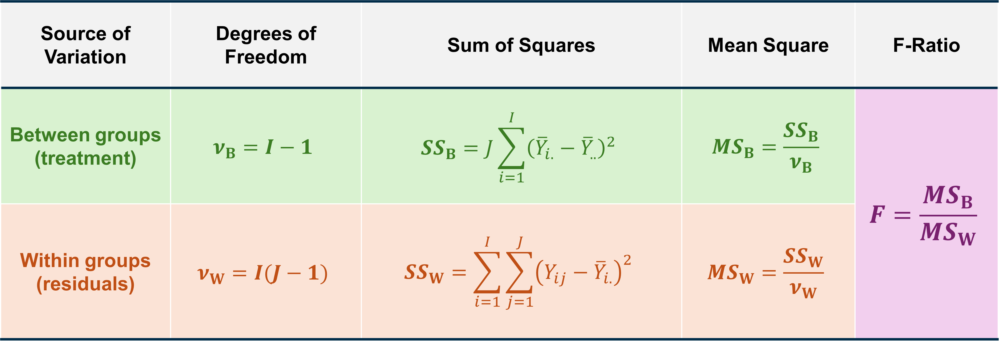
Example of Application
The simulated data in Table 14.1, reporting the walking distance for three groups of patients receiving different treatments, yields the ANOVA table shown below.
Based on the mean square values obtained for between- and within-group effects, the observed Fisher \(F\) statistic is:
\[ F = \frac{MS_\text{B}}{MS_\text{W}} = \frac{489.1}{9.1} = 53.7 \]
There are two equivalent approaches to deciding whether to reject \(H_0\).
Comparing Against the Critical Value
We may compare the observed value \(f\) with the critical value from the \(F\) distribution. The critical value \(F_{\nu_n,\nu_d,1-\alpha}\) depends on the degrees of freedom and the chosen significance level \(\alpha\):
\[ P\left(F > F_{\nu_n,\nu_d,1-\alpha}\right) = \alpha \]
For \(\alpha = 0.05\), \(\nu_n=I-1=2\) and \(\nu_d=I(J-1)=27\), as confirmed by the interactive plot above, the critical value is:
\[ F_{2,27,0.95} = 3.36 \]
Given the observed \(f=53.7>3.6=F_{2,27,0.95}\), the null hypothesis is rejected, indicating a significant group effect.
Using the \(p\)-value
Alternatively, the decision can be based on the \(p\)-value associated with the observed \(F\) statistic. The \(p\)-value is the probability of observing a value at least as large as \(f\) under \(H_0\):
\[ p = P(F > f) \]
If \(p \le \alpha\), the null hypothesis is rejected.
Based on the interactive plot above, we have that:
\[ P\left(F>f=53.7\right) \ll 0.001 \]
Given this probability is much smaller than \(\alpha\), \(H_0\) is rejected.
The walk distance data reported in Table 14.1 were simulated considering an equal number of observations per group. That data resulted in the ANOVA table reported above (Table 14.2) Supposing that only the first:
9 observations were taken for the physiotherapy group;
8 observations were taken for the balance group;
7 observations were taken for the strength group
and given that with unequal group sizes, the F-statistic is computed as:*
\[ F = \frac{SS_B / (I-1)}{SS_W / \sum_{i=1}^I (J_i - 1)} = \frac{\sum_{i=1}^I J_i (\bar{Y}_i - \bar{Y})^2 / (I-1)} {\sum_{i=1}^I \sum_{j=1}^{J_i} (Y_{ij} - \bar{Y}_i)^2 / \sum_{i=1}^I (J_i - 1)} \]
The partially completed ANOVA table would change as follows:
| Source | Degrees of Freedom | Sum of Squares | Mean Square | F-Ratio |
|---|---|---|---|---|
| Between Groups | 2 | 0.0805 | ||
| Within Groups | 21 | 0.0197 |
Compute the missing quantities.
What is the value of the between-group mean square (\(MS_\text{B}\))?
What is the value of the within-group mean square (\(MS_\text{W}\))?
What is the value of the F-ratio?
The mean squares are computed as:
\[ MS_B = \frac{SS_B}{I-1} = \frac{0.0805}{2} = 0.04025 \approx 0.0403 \]
With unequal group sizes, the between-group sum of squares uses weights \(J_i\):
\[ SS_B = \sum_{i=1}^I J_i (\bar{Y}_i - \bar{Y})^2 \]
instead of \(J(\bar{Y}_i - \bar{Y})^2\) in the balanced case.
\[ MS_W = \frac{SS_W}{\sum_{i=1}^I (J_i - 1)} = \frac{0.0197}{21} \approx 0.00094 \]
The within-group degrees of freedom now depend on all group sizes:
\[ \sum_{i=1}^I (J_i - 1) \]
instead of \(I(J-1)\) in the balanced case.
Finally, the F-statistic is:
\[ F = \frac{MS_B}{MS_W} = \frac{0.04025}{0.00094} \approx 42.9 \]
ImportantInterpreting One-Way ANOVA Results
Both approaches—comparison with a critical value or evaluation of the \(p\)-value—lead to the same conclusion.
In this example, both methods indicate rejection of \(H_0\), suggesting that at least one group mean differs significantly from the others.
However, ANOVA does not identify which groups differ; it only indicates the presence of a group effect.
14.4 Post-Hoc Analysis
Post-hoc analyses are multiple-comparison tests performed after rejection of \(H_0\) based on Fisher’s \(F\) statistic. ANOVA is therefore an omnibus inferential test, addressing the global question: is there evidence that at least one group mean differs from the others?
If the answer to this question is NO, running post-hoc analyses would only increase the possibility of committing a Type I error without justification.
If the answer is YES, running post-hoc analyses is justified.
Note
Different types of post-hoc analyses exist. Here, only the most commonly used multiple-comparison tests will be presented and discussed.
Fisher Least Significant Difference (LSD)
Fisher LSD is essentially a set of pairwise \(t\)-tests performed after a significant omnibus ANOVA, using the pooled within-group variance estimated from all groups. Considering any two groups, \(k\) and \(l\), the \(t\) test statistic is computed as:
\[ t_{k,l} = \frac{\overline{Y}_k-\overline{Y}_l} {\sqrt{MS_\text{W}\left(\frac{1}{J_k}+\frac{1}{J_l}\right)}} \tag{14.6}\]
where \(J_k\) and \(J_l\) correspond to the sample sizes in groups \(k\) and \(l\), respectively. \(MS_\text{W}\) is the pooled within-group variance, corresponding to the mean square of the within-group residuals:
\[ MS_\text{W} = \frac{SS_\text{W}}{\nu_\text{W}} = \frac{1}{\nu_\text{W}} \sum_{i=1}^I\sum_{j=1}^{J_i} \left(Y_{ij}-\overline{Y}_i\right)^2 \]
where \(\nu_\text{W}\) denotes the degrees of freedom for the within-group sum of squares:
\[ \nu_\text{W} = \sum_{i=1}^I\left(J_i-1\right) \]
Applying Fisher LSD to the Example Data
Considering the walk distance data reported in Table 14.1, the ANOVA test indicated a significant group effect. This suggests that walking distance differs significantly between at least two groups.
With the Fisher LSD post-hoc test, we may identify which group comparisons are responsible for this effect. Given the group means and the value of \(MS_\text{W}\) obtained from the walking data (Table 14.1 and Table 14.2):
- \(\overline{Y}_1=455.9 \text{m}\): mean walk distance for the physiotherapy group
- \(\overline{Y}_2=450.3 \text{m}\): mean walk distance for the balance training group
- \(\overline{Y}_3=442 \text{m}\): mean walk distance for the strength training group
- \(MS_\text{W}=r msw\): pooled variance across the three groups
the \(t\) statistic can be computed for each of the three possible pairwise comparisons:
\[ \begin{aligned} t_{1,2} &= \frac{455.9 - 450.3}{\sqrt{9.1\left(\frac{1}{10} + \frac{1}{10}\right)} } = 4.151 \\ t_{1,3} &= \frac{455.9 - 442}{\sqrt{9.1\left(\frac{1}{10} + \frac{1}{10}\right)} } = 10.303 \\ t_{2,3} &= \frac{450.3 - 442}{\sqrt{9.1\left(\frac{1}{10} + \frac{1}{10}\right)} } = 6.152 \end{aligned} \]
Given the following probability, considering the Fisher LSD post-hoc test for groups 1 and 2 (physiotherapy and balance training):
\[ P\left(t>|t_{1,2}|\right) \times 2 = 2.9649452\times 10^{-4} \]
we can say that patients undergoring physiotherapy walk over distances than those undergoing balance training.
The probability indicated above \(P\left(t>|t_{1,2}|\right) \times 2\) is a two-tailed probability. Therefore, it refers to the alternative hypothesis:
\[ \mu_1 \ne \mu_2 \]
This test only evaluates whether the two group means are significantly different. It does not test a directional hypothesis such as \(\mu_1 > \mu_2\) or \(\mu_1 < \mu_2\)
Therefore, given that the probability obtained is much lower than the usual significance level $ = 0.05 $, we reject the null hypothesis and conclude that the two groups differ significantly.
The answers “significantly larger” and “significantly smaller” would require a directional, one-tailed alternative hypothesis. They are not appropriate conclusions from the two-tailed probability used here.
To determine the direction of the effect, one should inspect the sign of the difference \((\overline{Y}_1 - \overline{Y}_2)\): a positive value indicates that group 1 has a larger mean, while a negative value indicates that group 2 has a larger mean.
When to Use Fisher LSD
Fisher LSD is among the most powerful post-hoc procedures because it does not apply a strong correction for multiple comparisons. This greater power comes at the cost of weaker control of the Family-Wise Error Rate (FWER; see Section 14.2.1).
When there are exactly three groups, the protected Fisher LSD procedure—where pairwise comparisons are performed only after a significant omnibus ANOVA—controls the FWER at approximately \(\alpha\). With four or more groups, however, Fisher LSD no longer provides adequate protection against Type I error inflation.
There are three scenarios to consider:
All means are equal
All means are equal. The omnibus ANOVA tests the global null hypothesis and keeps the Type I error rate at \(\alpha\). If the \(p\)-value for the \(F\) statistic is larger than \(\alpha\), we stop here and no further testing is justified.
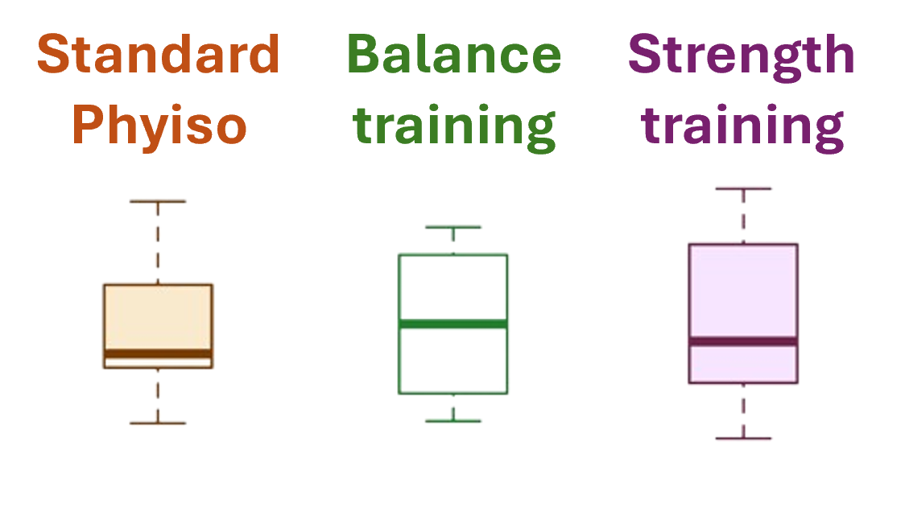
NO REJECTION of the omnibus null hypothesis:
\[ H_0: \mu_1 = \mu_2 = \mu_3 \]
One mean is different
One mean is different. The omnibus ANOVA is expected to yield an \(F\) statistic significantly larger than one. After rejection of the omnibus null hypothesis, the post-hoc comparisons identify which pairs of means differ.
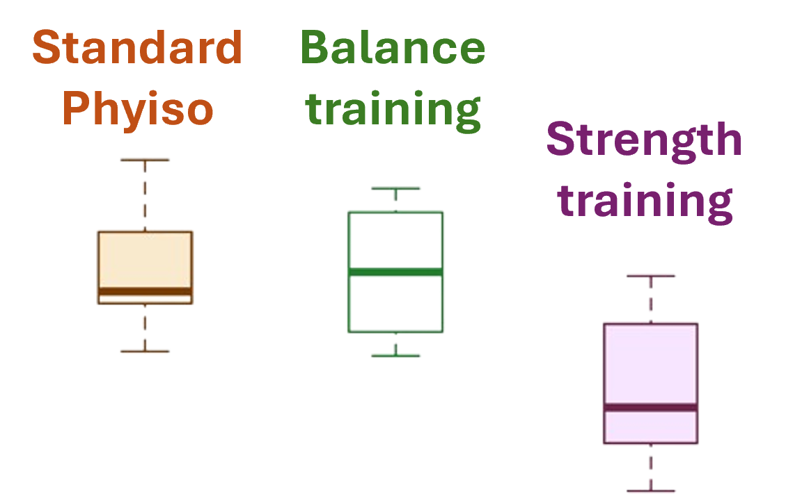
REJECTION of the omnibus null hypothesis:
\[ H_0: \mu_1 = \mu_2 = \mu_3 \]
All means differ
All means differ. In this case, the omnibus ANOVA is also expected to reject the null hypothesis. Because all pairwise null hypotheses are false, no Type I error can be committed in the pairwise comparisons.
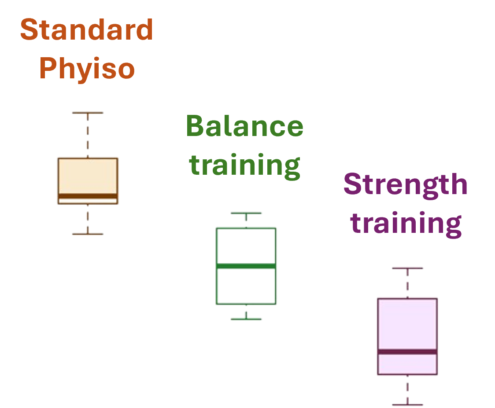
REJECTION of the omnibus null hypothesis:
\[ H_0: \mu_1 = \mu_2 = \mu_3 \]
Tukey Honestly Significant Difference (HSD)
The Tukey HSD post-hoc analysis is more conservative than Fisher LSD. It corrects for multiple comparisons with the goal of keeping the FWER equal to the significance level \(\alpha\). This correction is particularly useful for factors with four or more levels.
The correction consists of considering a different distribution for the test statistic. While Fisher LSD is based on Student’s \(t\)-distribution to assess the significance of pairwise differences, Tukey HSD uses a test statistic (\(q\)) following the Studentized Range Distribution.
For equal sample sizes, the Tukey statistic can be written as:
\[ q_{I,\nu} = \max_{k,l} \frac{\left| \overline{Y}_k - \overline{Y}_l \right|} {\sqrt{MS_\text{W}/J}}, \quad k \ne l \tag{14.7}\]
where:
- \(\overline{Y}_k\) is the sample mean for group \(k\).
- \(MS_\text{W}\) is the pooled within-group variance.
- \(I\) is the number of groups.
- \(J\) is the number of observations per group.
- \(\nu\) is the within-group degrees of freedom.
For a balanced design with \(k\) groups and \(n\) observations per group:
\[ \nu = I(J-1) \]
More generally,
\[ \nu = N-I \]
where \(N\) is the total number of observations.
Figure 14.5 illustrates the difference between the Studentized Range Distribution and the Student’s \(t\) Distribution presented in Section 12.2.
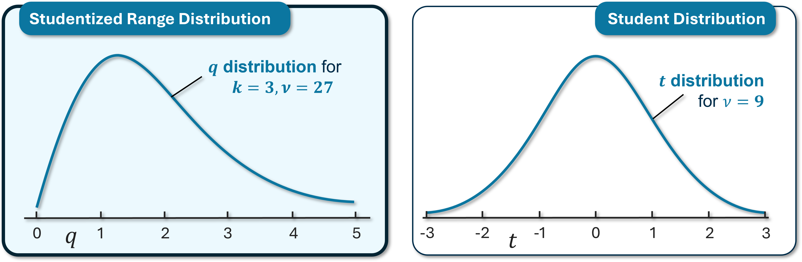
ImportantKey point of the Studentized Range Distribution
All pairwise mean comparisons are evaluated with respect to the distribution of the maximum standardized difference among group means.
Therefore, the \(q\) test statistic depends on the total number of groups \(k\), not only on the pair being compared. This is the basis for the multiple-comparison correction.
Applying Tukey HSD to the Example Data
To provide a direct comparison with the Fisher LSD post-hoc method, let us apply Tukey HSD to the walk distance data reported in Table 14.1.
The values required to compute the \(q\) test statistic (Equation 14.7)—the group means \(\overline{Y}_i\) and the pooled variance \(MS_\text{W}\)—were introduced in Section 14.4.1.1. Based on these values, the three pairwise comparisons are:
\[ \begin{aligned} q_{1,2} &= \frac{\left|455.9 - 450.3\right|}{\sqrt{9.1\left(\frac{1}{10}\right)} } = 5.87 \\ q_{1,3} &= \frac{\left|455.9 - 442\right|}{\sqrt{9.1\left(\frac{1}{10}\right)} } = 14.571 \\ q_{2,3} &= \frac{\left|450.3 - 442\right|}{\sqrt{9.1\left(\frac{1}{10}\right)} } = 8.701 \end{aligned} \]
Considering the first pairwise comparison, between groups \(1\) and \(2\), the probability of observing a \(q\) value greater than that obtained under \(H_0\) is:
\[ P(q_{I=3,\,\nu=27} > q_{1,2}) = 0.001 \]
This probability is larger than that obtained with Fisher LSD for the same pairwise comparison in Section 14.4.1.1. This reflects the more conservative nature of Tukey HSD. Given the probability remains smaller than \(\alpha\), the conclusion that the means of groups \(1\) and \(2\) differ significantly is maintained.
Applying Tukey HSD to Example Data with Four Groups
Being more conservative, Tukey HSD protects against FWER inflation and is thus well suited for pairwise comparisons involving several factor levels.
Suppose there was a fourth group for the walk distance data, involving a stretch-training protocol, with \(J_4 = 8\) observations. Table 14.3 reports the data for this new group, while Figure 14.6 summarizes the distribution of walking distance for the four groups.
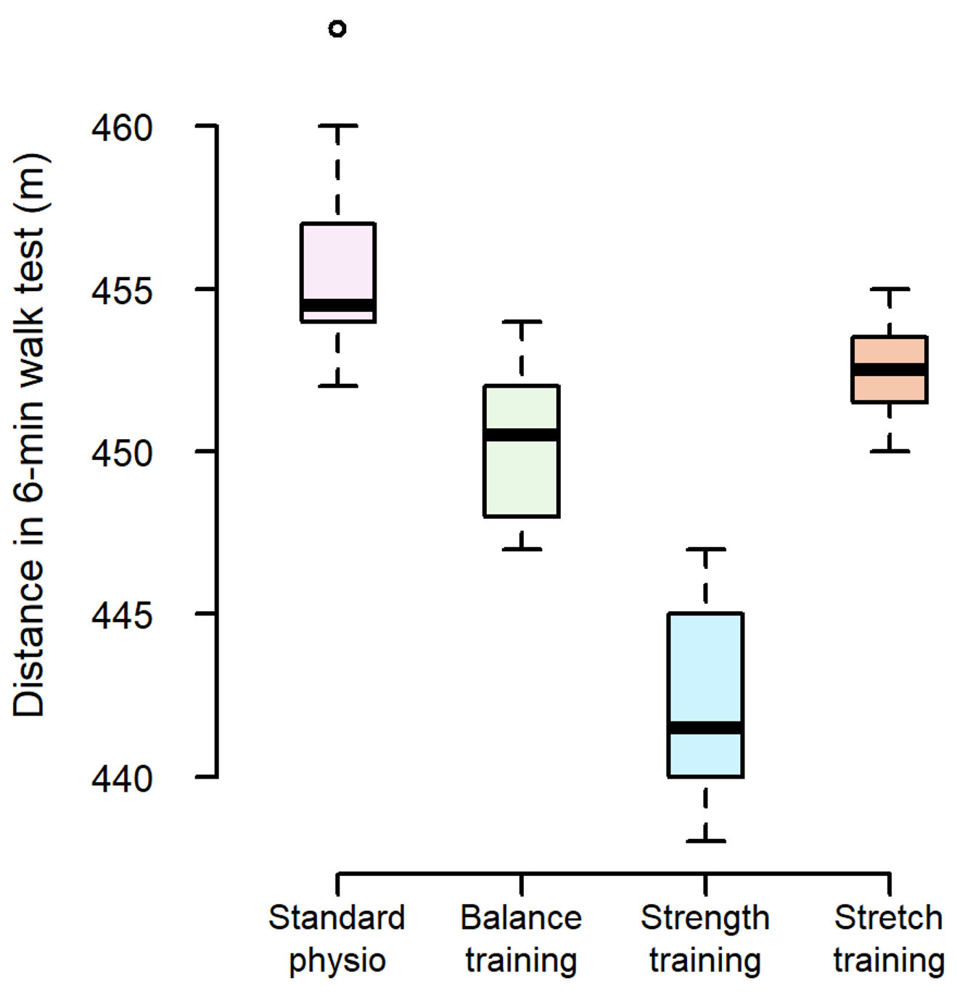
In this case the degrees of freedom change to:
\[ \nu_\text{W} =\sum_{i=1}^4 J_i-1= 9+9+9+7 = 34 \]
The pooled variance also changes, because the new group contributes to the within-group sum of squares:
\[ MS_\text{W} = \frac{1}{34} \sum_{i=1}^4 \sum_{j=1}^{J_i} \left(Y_{ij}-\overline{Y}_i\right)^2 = 7.8 \]
Based on Table 14.3, the mean walk distance for the new group is \(\overline{Y}_4=452.5 \text{ m}\).
To compute the Tukey test statistic between groups with unequal sample sizes, we use the Tukey–Kramer adjustment:
\[ q_{k,l} = \frac{\left| \overline{Y}_k - \overline{Y}_l \right|} {\sqrt{\frac{MS_\text{W}}{2}\left(\frac{1}{J_k} + \frac{1}{J_l}\right)}} \tag{14.8}\]
where \(J_k\) and \(J_l\) denote the sample sizes of groups \(k\) and \(l\), respectively.
Applying this equation to compare groups \(1\) (standard physiotherapy) and \(4\) (stretch training) gives:
\[ q_{1,4} = \frac{\left|455.9 - 452.5\right|}{\sqrt{\frac{7.8}{2}\left(\frac{1}{10} + \frac{1}{8}\right)} } = 3.63 \]
The corresponding probability is:
\[ P(q_{I=4, \, \nu=34}>q_{1,4}) = 0.067 \]
Being this probability greater than the significance level \(\alpha = 0.05\), the conclusion is that there is no evidence of a significant difference in walking speed between physiotherapy and stretching groups.
NoteTukey method
Tukey method was designed to consider all possible multiple comparisons. For \(I\) groups, there is a total of \(I(I-1)2\) multiple comparisons.
Henceforth the Tukey–Kramer notation will be used to refer to the Tukey’s post-hoc analysis, regardless of the sample size.
The Dunnett Test
This test is mainly used when interest lies in comparing different (treatment) groups against one reference (control) group. The Dunnett test relies on a Student’s \(t\)-type statistic:
\[ t_i = \frac{\overline{Y}_i-\overline{Y}_0} {\sqrt{MS_\text{W} \left( \frac{1}{J_i}+ \frac{1}{J_0}\right)}} \tag{14.9}\]
where \(\overline{Y}_0\) corresponds to the mean of the reference group, with \(J_0\) observations.
Just like the Tukey–Kramer method, the Dunnett test applies a correction to control the FWER. This correction is based on the joint multivariate \(t\) distribution of the comparisons between treatment groups and the control group. This distribution depends on the degrees of freedom associated with the pooled variance \(MS_\text{W}\), the dependence between comparisons arising from the shared control group, and the total number of comparisons.
For a total of \(I\) groups, the number of comparisons in the Dunnett test is limited to \(I-1\). Because this is smaller than the number of all possible pairwise comparisons,
\[ \frac{I(I-1)}{2}, \]
the correction applied by the Dunnett test is less conservative than the Tukey–Kramer correction when the only relevant comparisons are against a control group. The Dunnett test is therefore generally more powerful than the Tukey–Kramer test for control-versus-treatment comparisons.
For these comparisons, the Dunnett test usually yields smaller adjusted \(p\)-values than the Tukey–Kramer method.
Applying the Dunnett Test to Example Data with Four Groups
Considering the mean values and the pooled variance reported above for the \(I=4\) groups (see Section 14.4.1.1 and Section 14.4.2.2), Figure 14.7 shows the \(p\)-values obtained for the three comparisons with the Dunnett test and for all multiple comparisons with the Tukey–Kramer method.
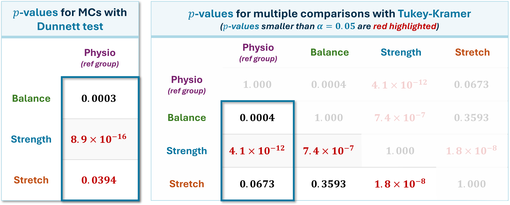
NoteDunnett versus Tukey–Kramer
Figure 14.7 illustrates the greater power of the Dunnett test when compared with Tukey–Kramer for comparisons against a reference group. The Dunnett method should be considered when the scientifically relevant comparisons are those between treatment groups and a control group.
The Bonferroni Correction
The Bonferroni correction applies to both parametric and non-parametric multiple-comparison procedures. When \(n_c\) multiple comparisons are assessed, as discussed in Section 14.2.1, the probability of committing at least one Type I error, termed the Family-Wise Error Rate (\(\alpha^*\)), is greater than the Type I error rate for a single test. The Bonferroni correction keeps \(\alpha^* \le \alpha\).
The Bonferroni method is based on Boole’s inequality. Let \(H_i\) denote the event of incorrectly rejecting the null hypothesis in the \(i\)-th comparison. Then \(P(H_i)\) is the probability of committing a Type I error in that comparison, while
\[ P\left(\bigcup_{i=1}^{n_c} H_i\right) \]
is the probability of committing at least one Type I error across all comparisons. Boole’s inequality states that:
\[ P \left( \bigcup_{i=1}^{n_c} H_i \right)\leq\sum_{i=1}^{n_c} P(H_i) \]
Therefore, if each comparison is tested at level \(\alpha\),
\[ \alpha^*\le\sum_{i=1}^{n_c} \alpha=n_c\alpha \]
To limit the FWER to a desired value \(\alpha^*\), the Bonferroni method sets the significance level for each individual comparison to:
\[ \alpha = \frac{\alpha^*}{n_c} \tag{14.10}\]
Checking FWER with Bonferroni Correction
With the Bonferroni correction, the Family-Wise Error Rate defined in Equation 14.1 becomes:
\[ \alpha^* = 1 - \left(1-\frac{\alpha}{n_c} \right)^{n_c} \]
where \(n_c\) is the total number of multiple comparisons to be made.
This expression assumes independence between comparisons. The Bonferroni correction itself, however, does not require independence; it is valid because it relies on Boole’s inequality.
Equivalently, instead of applying the correction to \(\alpha\), the correction may be applied to the \(p\)-values associated with the pairwise test statistics. This is the most common way of reporting the Bonferroni correction.
In this case, each uncorrected \(p\)-value is multiplied by the total number of comparisons \(n_c\):
\[ p_\text{Bonferroni} = n_c p \]
If the corrected \(p\)-value is smaller than the desired significance level (e.g. \(\alpha = 0.05\)), the null hypothesis for that comparison is rejected.
An example of this method applied to the walk distance data (Figure 14.6) is shown in Figure 14.8.
NoteBonferroni is a conservative correction
The Bonferroni correction is conservative because it controls the Type I error using a worst-case scenario. In practice, the overall probability of committing a Type I error is often smaller than the value assumed by the correction. As a result, Bonferroni may reduce statistical power more than necessary.
The Bonferroni-Holm Correction
This post-hoc method applies a less severe correction to the FWER than the Bonferroni correction. Instead of using a fixed adjustment factor \(n_c\) for all comparisons, the Bonferroni-Holm correction applies a stepwise correction based on the rank order of the \(p\)-values.
The procedure is illustrated in Figure 14.8 and can be summarized in four main steps:
- compute the test statistic for the \(n_c\) multiple comparisons, for example using the Fisher LSD statistic in Equation 14.6.
- compute the uncorrected \(p\)-value associated with each test statistic.
- rank the \(p\)-values in ascending order, from smallest to largest.
- compare the ranked \(p\)-values sequentially with progressively less stringent thresholds.
For the ordered \(p\)-values
\[ p_{(1)} \le p_{(2)} \le \ldots \le p_{(n_c)}, \]
the Holm procedure compares the \(k\)-th ordered \(p\)-value with:
\[ \frac{\alpha}{n_c + 1 - k} \]
Starting from the smallest \(p\)-value, each null hypothesis is rejected as long as:
\[ p_{(k)}\left(n_c + 1 - k\right)\le\alpha \]
The procedure stops at the first non-significant comparison.
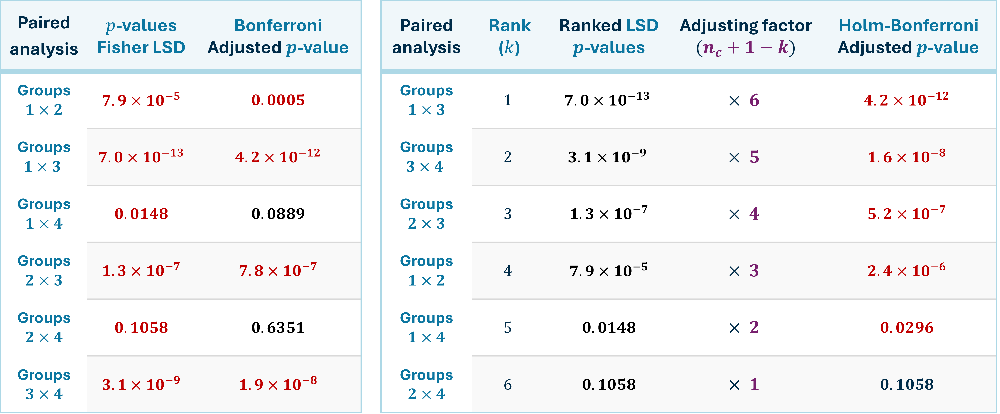
The Bonferroni-Holm correction generally yields greater statistical power than the standard Bonferroni correction while still controlling the FWER. Because of this, it is often preferred over the more conservative Bonferroni correction.
NoteConfidence intervals with Holm correction
The Bonferroni-Holm method is primarily a stepwise hypothesis-testing procedure. Simultaneous confidence intervals are less straightforward to obtain than with Bonferroni or Tukey-based methods.
Which Post-Hoc Test to Consider?
Figure 14.9 provides a direct comparison of the \(p\)-values for the five post-hoc methods discussed above. \(p\)-values indicating significant pairwise differences are highlighted in red.
There is no universally best post-hoc method. The choice depends on the scientific question and on how Type I and Type II errors should be balanced.
If the goal is to compare all pairs of groups, Tukey–Kramer is often appropriate. If the goal is to compare treatments against a control group, Dunnett is usually preferable. If a simple and broadly applicable correction is required, Bonferroni or Bonferroni-Holm may be used, with Holm generally offering greater power than standard Bonferroni.
Figure 14.10 provides a general guideline for selecting a post-hoc method according to the study design and the desired balance between Type I and Type II errors.
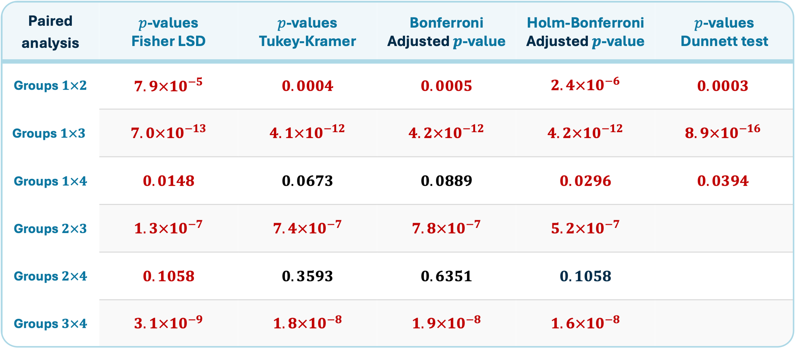
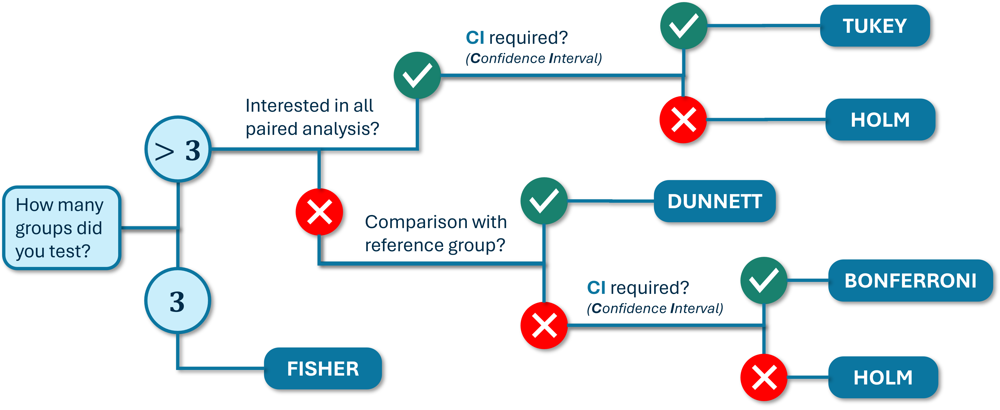
14.5 Non-Parametric ANOVA for Independent Groups(Kruskal-Wallis)
The one-way ANOVA inferential test presented in Section 14.3 relies on three main assumptions:
- the error terms \(\varepsilon_{ij}\) are Normally distributed (see Equation 14.2). Like the \(t\) test, the \(F\) test remains approximately valid for moderate to large samples drawn from moderately non-Normal distributions. If this assumption is severely violated, the mean squares no longer follow a \(\chi^2\) distribution and therefore the \(F\) ratio does not follow a Fisher distribution (see Equation 14.5).
- the error variance \(\sigma^2\) is constant (homoscedasticity). In many applications, error variances may differ between groups. For example, subjects who underwent the stretch-training protocol in the simulated data shown in Figure 14.6 exhibited less variable walking distances over 6 minutes. ANOVA is, however, reasonably robust to heteroscedasticity when the number of observations is similar across groups.
- the observations, and therefore the errors \(\varepsilon_{ij}\), are independent. This assumption is fundamental for both parametric and non-parametric methods.
When there is evidence that either of the first two assumptions is severely violated, a non-parametric alternative to one-way ANOVA may be preferred.
The Kruskal-Wallis Test Statistic
The Kruskal-Wallis method generalizes the non-parametric rank-based tests used to compare two independent groups (see Section 13.3.1).
The Kruskal-Wallis test statistic is based on pooling and ranking observations across all groups. To illustrate the computation of the test statistic, let us consider a subset of the walk-distance data for three groups, according to Table 14.5 below.
The null hypothesis tested by the Kruskal-Wallis method is that the distributions of the groups are identical. When group distributions have similar shapes and spreads, this is often interpreted as testing equality of group medians.
Similarly to the parametric ANOVA, the Kruskal-Wallis method relies on a between-group sum of squares computed over ranks:
\[ \begin{aligned} SS_\text{B} &= \sum_{i=1}^I J_i\left(\overline{R}_i - \overline{R}\right)^2 \\ \overline{R} &= \frac{1}{N}\sum_{i=1}^{I}\sum_{j=1}^{J_i} R_{ij} = \frac{N+1}{2} \\ \overline{R}_i &= \frac{1}{J_i}\sum_{j=1}^{J_i} R_{ij} \end{aligned} \]
where \(N\) is the total number of observations across all groups $ N=_{i=1}^I J_i$.
When there are at least five observations per group, the null hypothesis can be assessed using the following test statistic:
\[ K = \frac{12}{N(N+1)}SS_\text{B} \]
It should be noted that, in the presence of tied ranks, as in the example data (see Table 14.5), the variance of ranks is reduced. A correction is therefore needed to account for ties:
\[ D =1-\frac{\sum_{p=1}^P \left(t_p^3-t_p\right)}{N^3-N} \]
where \(t_p\) is the number of repeated observations associated with the \(p\)-th tied rank.
For example, in Table 14.5 there are \(P=3\) tied ranks. The first tied rank contains two replicated observations:
\[ t_1=2, \quad r_{31}=r_{32}=1.5 \]
The third tied rank contains four replicated observations:
\[ t_3=4, \quad r_{13}=r_{14}=r_{16}=r_{25}=10.5 \]
The Kruskal-Wallis statistic adjusted for ties is therefore:
\[ K_\text{adj} = \frac{K}{D} \sim \chi^2_{\nu=I-1} \tag{14.11}\]
Thus, \(K_\text{adj}\) approximately follows a chi-square distribution with \(\nu=I-1\) degrees of freedom.
Applying Kruskal-Wallis to the Walk-Distance Data
The goal here is to assess whether there is a significant difference in walk distance between groups by applying the Kruskal-Wallis method to the data reported in Table 14.5.
From this data set, the following quantities are computed:
- \(SS_\text{b}= 231.825\)
- \(k = 11.59125\)
- \(d = 0.9785714\)
- \(k_\text{adj} = 11.845073\)
Under the null hypothesis, that \(K \sim \chi^2_{I-1=2}\), we may compute the probability of observing a value larger than that obtained from the data:
\[ P(K>k_\text{adj}) = 0.003 \]
Given this probability is smaller than the significance level, typically set at \(\alpha=0.05\), there is evidence to reject the hypothesis that the walk distance is comparable between groups.
Which of the post-hoc analysis listed below would be indicated for the pairwise comprisons?
Except for the Bonferroni correction, the other post-hoc methods rely on the assumption that the distribution of the errors is Normal.
14.6 One-Way Analysis of Variance for Repeated Measures
Parametric and non-parametric inferential methods were presented in the previous sections to assess differences between three or more independent groups. In such designs, different groups of subjects are recruited for each condition.
Sometimes, however, measurements are collected repeatedly from the same subjects over three or more occasions (often across time). These designs are known as repeated-measures designs.
Inferential methods for assessing two paired groups were presented in Chapter 12. This section extends these methods to three or more repeated measures.
Example of Application: Building Intuition for the Importance of Repeated Measures
Let us consider the effect of a new diet program on weight loss. The table in Figure 14.11 reports body-mass measurements obtained from a sample of \(J=4\) subjects during baseline, and three and six weeks after starting the diet (\(I=3\)).
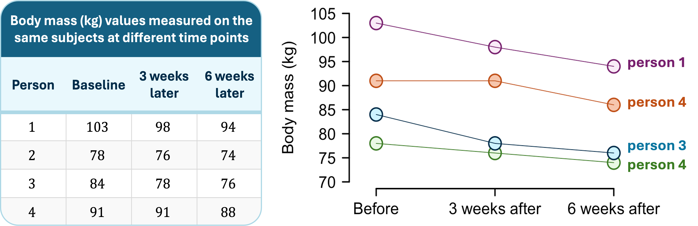
The Kruskal-Wallis test statistic computed from this data set is relatively low. Under the null hypothesis of no diet effect, the probability of observing a value greater than that obtained is large. The parametric ANOVA also yields a low \(F\) statistic with a similarly large associated probability. Both approaches therefore lead to the same conclusion: there is insufficient evidence to reject \(H_0\). Derivation is left as an exercise for the interested reader.
By visually inspecting the plot in Figure 14.11, however, we observe a consistent decrease in body mass for all four subjects over the six-week period. Why then do we obtain such large \(p\)-values with Kruskal-Wallis and with the parametric ANOVA?
The issue is the large variability between individuals. In the independent-group ANOVA, the within-group variability reflects both random error and differences between subjects. This inflates the denominator of the \(F\) ratio and reduces the sensitivity of the test.
NotePartitioning the within-group sum of squares
Repeated-measures designs separate the variability due to differences between subjects from the residual error. This generally increases the sensitivity of the inferential test to detect changes across repeated measurements.
The Repeated-Measures Model
Let us define a new term \(\beta_j\) representing the variability between subjects. For a fixed number of subjects \(J\) measured over \(I\) repeated measurements, the repeated-measures ANOVA model is:
\[ Y_{ij} = \mu + \alpha_i + \beta_j + \varepsilon_{ij} \tag{14.12}\]
The sum-of-squares identity obtained for the independent-group one-way ANOVA (see Equation 14.4) becomes:
\[ SS_\text{tot} = SS_\text{I} + SS_\text{J} + SS_\text{E} \tag{14.13}\]
where the terms respectively correspond to the total sum of squares, the repeated-measure effect, the subject effect, and the residual error:
\[ \begin{aligned} SS_\text{tot} &= \sum_{i=1}^I\sum_{j=1}^J\left(Y_{ij}-\overline{Y}\right)^2 \\ SS_\text{I} &= J\sum_{i=1}^I\left(\overline{Y}_{i.}-\overline{Y}\right)^2 \\ SS_\text{J} &= I\sum_{j=1}^J\left(\overline{Y}_{.j}-\overline{Y}\right)^2 \end{aligned} \]
where \(\overline{Y}_{i.}\) and \(\overline{Y}_{.j}\) denote the means across subjects and across repeated measurements, respectively. Figure 14.12 provides a schematic illustration of how to compute \(SS_\text{I}\) and \(SS_\text{J}\).
The error sum of squares \(SS_\text{E}\) can be computed either from the identity above (Equation 14.13) or directly from the residuals:
\[ \begin{aligned} SS_\text{E} &= SS_\text{tot} - SS_\text{I} - SS_\text{J}, \quad \text{or} \\ SS_\text{E} &= \sum_{i=1}^I \sum_{j=1}^J\left(Y_{ij}-\overline{Y}_{i.}-\overline{Y}_{.j}+\overline{Y}\right)^2 \end{aligned} \]
NoteDeriving \(SS_\text{E}\) from residuals
Residuals are computed as:
\[ \varepsilon_{ij} = Y_{ij} - \hat{Y}_{ij} \]
where \(\hat{Y}_{ij}\) is the estimated value for subject \(j\) at repeated measurement \(i\):
\[ \hat{Y}_{ij} = \mu + \alpha_i + \beta_j \]
Given that the expected values of the grand mean, repeated-measure effect, and subject effect are:
\[ \begin{aligned} E\left(\mu\right) &= \overline{Y} \\ E\left(\alpha_i\right) &= \overline{Y}_{i.}-\overline{Y} \\ E\left(\beta_j\right) &= \overline{Y}_{.j}-\overline{Y} \end{aligned} \]
the residual error becomes:
\[ \begin{aligned} \varepsilon_{ij} &= Y_{ij} - \overline{Y} - \left(\overline{Y}_{i.}-\overline{Y}\right) - \left(\overline{Y}_{.j}-\overline{Y}\right) \\ &= Y_{ij} - \overline{Y}_{i.} - \overline{Y}_{.j} +\overline{Y} \end{aligned} \]
It therefore follows that:
\[ SS_\text{E} = \sum_{i=1}^I\sum_{j=1}^J\left(Y_{ij}-\overline{Y}_{i.}-\overline{Y}_{.j}+\overline{Y}\right)^2 \]
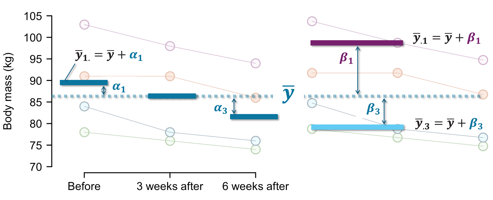
The \(F\) Test Statistic for Repeated Measures
Compared with the Fisher \(F\) statistic for independent groups (see Equation 14.5), the main difference in repeated-measures ANOVA lies in the denominator of the \(F\) ratio:
\[ F = \frac{SS_\text{I}/\nu_\text{I}} {SS_\text{E}/\nu_\text{E}} = \frac{MS_\text{I}} {MS_\text{E}} \]
where \(\nu_\text{E}\) corresponds to the degrees of freedom associated with the residual error term. It is computed as:
\[ \nu_\text{E} = \nu_\text{tot} - \nu_\text{I}-\nu_\text{J} = (I-1)(J-1) \]
Inference follows from the probability of observing a Fisher \(F\)-value larger than the observed value \(f\), under the null distribution:
\[ F \sim F(\nu_\text{I},\nu_\text{E}) \]
(see the interactive plot above).
EXERCISE - Complete the Table and Draw the Conclusion
The partial repeated-measures ANOVA table below summarizes the analysis performed to assess the effect of a diet program on body mass over three time points.
Complete the missing values in the table and use the result to decide whether there is evidence of a diet effect.
| Source | Degrees of Freedom | Sum of Squares | Mean Square |
|---|---|---|---|
| Subjects | \(\nu_J = 3\) | \(SS_\text{J} = 922.3\) | \(MS_\text{J} = 307.4\) |
| Time | \(\nu_I = 2\) | \(SS_\text{I} = 84.5\) | \(MS_\text{I} = 42.3\) |
| Error | \(\nu_E = ?\) | \(SS_\text{E} = ?\) | \(MS_\text{E} = ?\) |
| Total | \(\nu_{\text{TOT}} = 11\) | \(SS_{\text{TOT}} = 1022.3\) |
\(\nu_E =\)
\(SS_\text{E} =\)
\(MS_\text{E} =\)
\(f =\)
\(P(F_{2,\nu_\text{E}} > f)\) =
What is your decision?
The degrees of freedom of residuals as well as the residual sum of squares are obtained from the identities:
\[ \begin{aligned} \nu_\text{tot} &= \nu_\text{I} + \nu_\text{J} + \nu_\text{E} \\ SS_\text{tot} &= SS_\text{I} + SS_\text{J} + SS_\text{E} \end{aligned} \]
Therefore,
\[ \begin{aligned} \nu_\text{E} &= 11 - 3 - 2 = 6 \\ SS_\text{E} &= 1022.3 - 84.5 - 922.3 = 15.5 \end{aligned} \]
The residual mean square is:
\[ MS_E = \frac{SS_\text{E}}{\nu_\text{E}} = \frac{15.5}{6} = 2.6 \]
The observed Fisher statistic is:
\[ F = \frac{MS_\text{I}}{MS_\text{E}} = \frac{42.3}{2.6} = 16.3 \]
Using the \(F\) distribution interactive plot with \(\nu_I=2\) and \(\nu_E=6\) degrees of freedom:
\[ p = P(F_{2,6} > 16.3) \approx 0.004 \]
Because \(p < 0.05\), the null hypothesis is rejected. There is evidence of a significant diet effect.
14.7 Non-Parametric ANOVA for Repeated Measures (Friedman)
The exercise above illustrates the increased power of repeated-measures ANOVA over the one-way design for independent groups. However, the parametric repeated-measures ANOVA relies on assumptions similar to those underlying the independent-group ANOVA: independence between subjects, Normally distributed residuals, and homogeneity of variance.
Given the limited number of subjects considered in the diet example above (\(J=4\); Figure 14.11), the Normality assumption may be difficult to verify reliably.
When there is evidence that the assumptions of Normality or homoscedasticity are severely violated, a non-parametric alternative to repeated-measures ANOVA may be preferable.
The Friedman Test Statistic
The Friedman method is analogous to the Kruskal–Wallis method, with the main difference that observations are ranked within blocks—that is, within subjects.
To illustrate the computation of the Friedman test statistic, let us consider the ranked body-mass data shown in Table 14.6.
The null hypothesis tested by the Friedman method is that the distribution of ranks is identical across repeated measurements. When distributions have similar shapes and spreads, this hypothesis may be interpreted as testing equality of median values across conditions.
For \(I\) repeated measurements on each block (subject), the Friedman statistic is computed as:
\[ Q = \frac{12J}{I(I+1)} \sum_{i=1}^I \left(\overline{R}_i - \overline{R}\right)^2 = \frac{12}{I(I+1)}SS_\text{B} \]
where:
\[ SS_\text{B} = J \sum_{i=1}^I \left(\overline{R}_i - \overline{R}\right)^2 \]
and where \(\overline{R}_i\) and \(\overline{R}\) respectively denote the mean rank for the \(i\)-th repeated measurement and the mean of all \(IJ\) ranks.
NoteDerivation of rank means and \(SS_\text{B}\)
The mean ranks \(\overline{R}_i\) and \(\overline{R}\) are derived analogously to the Kruskal–Wallis method (see Section 14.5.1).
In the presence of ties, as for subject \(j=4\) in Table 14.6, the variance of ranks is reduced. Unlike the Kruskal–Wallis correction, the Friedman correction accounts for ties within subjects:
\[ C = 1- \frac{\sum_{j=1}^J \sum_{m=1}^{M_j}\left(t_{jm}^3-t_{jm}\right)} {J\left(I^3-I\right)} \]
where \(t_{jm}\) is the number of tied observations in the \(m\)-th group of ties for subject \(j\).
For example, in Table 14.6 there is one group of ties for subject \(j=4\):
\[ t_{41}=2, \quad r_{14}=r_{24}=2.5 \]
The Friedman statistic adjusted for ties is therefore:
\[ Q_\text{adj} = \frac{Q}{C} \sim \chi^2_{\nu=I-1} \tag{14.14}\]
Thus, \(Q_\text{adj}\) approximately follows a chi-square distribution with \(\nu=I-1\) degrees of freedom.
Applying Friedman to the Diet Example
The question addressed here is whether there is a significant decrease in body mass over time. Due to the small sample size, the Friedman method is applied to the data reported in Table 14.6.
From this data set, the following quantities are computed:
- \(SS_\text{B}= 7.125\)
- \(q = 7.125\)
- \(c = 0.9375\)
- \(q_\text{adj} = 7.6\)
Under the null hypothesis, that \(Q_\text{adj} \sim \chi^2_{I-1}\), we may compute the probability of observing a value larger than that obtained from the data:
\[ P(Q>q_\text{adj}) = 0.022 \]
Given this probability is smaller than the significance level, typically set at \(\alpha=0.05\), there is evidence supporting a significant effect of the diet program.
NotePost-hoc following rejection of \(H_0\) with Friedman
To assess at which time points weight loss became significant, multiple comparisons may be performed. Given the likely violation of the Normality assumption, Bonferroni or Bonferroni–Holm corrections may be used to control the Family-Wise Error Rate.
14.8 Two-Way Analysis of Variance (Fixed Effects)
The previous sections presented different approaches for testing the effect of a single factor with three or more levels. These approaches differed according to whether groups were independent or repeated and whether assumptions such as Normality and homoscedasticity were satisfied.
This section extends the parametric ANOVA framework to designs involving two factors, each with two or more levels—the two-way ANOVA layout.
Example of Application
The two-way ANOVA design is developed below using simulated gait-speed data inspired by the study of Taylor-Piliae and colleagues [3].
As stated by Taylor-Piliae and colleagues [3]:
Gait velocity is an objective indicator of post-stroke walking ability, a reliable marker of deficit severity, and a strong predictor of functional community walking.
Based on their study, Table 14.7 reports simulated gait-speed data for groups of stroke survivors.
The question of interest is whether there is a significant treatment effect on gait speed. Because groups were stratified according to stroke severity, a more complex model than that considered for one-way ANOVA is required.
Additive and Interaction Effects
The ANOVA models presented for one-way independent-group designs (Equation 14.2) and repeated-measures designs (Equation 14.12) parameterize factors as additive effects. In a two-way design, however, an additive model assumes that there is no interaction between factors. In other words, the effect of one factor does not depend on the level of the other factor.
Examples of additive effects between two factors, \(A\) and \(B\), are illustrated in the mean plots of Figure 14.13:
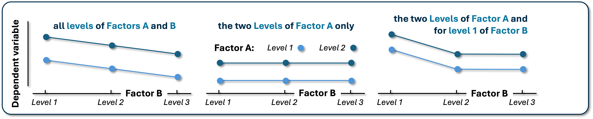
- case 1: both factors \(A\) and \(B\) exhibit additive effects.
- case 2: only factor \(A\) exhibits an additive effect.
- case 3: factor \(B\) differentiates level 1 from levels 2 and 3, while factor \(A\) still produces a consistent separation.
ImportantGraphical characteristic of additive effects
Parallel lines in mean plots such as those shown in Figure 14.13 provide evidence for the absence of interaction between factors.
EXERCISE - Two-way Interaction
Considering this mean plot created from the data reported in Table 14.7, what sort of interaction seems more plausible between groups and disease severity?
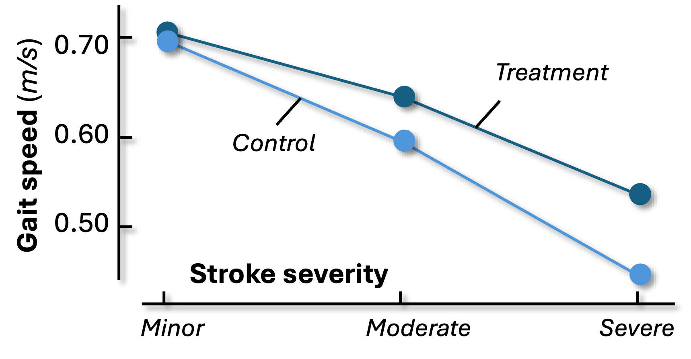
The Two-Way Model
Let \(I\) and \(J\) denote the number of levels of the two factors. For each of the \(I\times J\) combinations of levels, there are \(K\) observations (\(K=5\) in Table 14.7).
The full two-way ANOVA model including interaction is:
\[ Y_{ijk} = \mu + \alpha_i + \beta_j + \delta_{ij} + \varepsilon_{ijk} \tag{14.15}\]
where:
- \(\mu\) is the grand mean, over the \(IJK\) observations.
- \(\alpha_i\) is the additive effect of factor \(I\) (treatment effect).
- \(\beta_j\) is the additive effect of factor \(J\) (stroke severity effect).
- \(\delta_{ij}\) is the interaction effect between the two factors.
- \(\varepsilon_{ijk}\) is the residual error.
Assuming independent Normally distributed residuals with zero mean and variance \(\sigma^2\):
\[ E[Y_{ijk}] = \mu + \alpha_i + \beta_j + \delta_{ij} \]
Under the constraints:
\[ \sum_{i=1}^I\alpha_i = 0 \qquad \sum_{j=1}^J\beta_j = 0 \qquad \sum_{i=1}^I\delta_{ij}= \sum_{j=1}^J\delta_{ij}=0 \tag{14.16}\]
parameter estimates are:
\[ \begin{aligned} \hat{\mu} &= \overline{Y} \\ \hat{\alpha}_i &= \overline{Y}_{i..}-\overline{Y} \\ \hat{\beta}_j &= \overline{Y}_{.j.}-\overline{Y} \\ \hat{\delta}_{ij} &= \overline{Y}_{ij.} - \overline{Y}_{i..} - \overline{Y}_{.j.} + \overline{Y} \end{aligned} \]
NoteDeriving the estimates
To estimate \(\alpha_i\) based on the two-way model (Equation 14.15), we isolate the contribution of factor \(I\) by averaging values across the \(K\) observations and the \(J\) levels of factor \(J\):
\[ \begin{aligned} \overline{Y}_{i..} &= \frac{1}{JK} \sum_{j=1}^J \sum_{k=1}^K Y_{ijk} \\ &= \mu + \alpha_i + \frac{1}{J}\sum_{j=1}^J \beta_j + \frac{1}{J}\sum_{j=1}^J \delta_{ij} + \frac{1}{JK}\sum_{j=1}^J\sum_{k=1}^K\varepsilon_{ijk} \end{aligned} \]
Given the constraints \(\sum_{j=1}^J\beta_j=0\) and \(\sum_{j=1}^J\delta_{ij}=0\), and because residuals average to zero, this becomes:
\[ \overline{Y}_{i..} = \mu + \alpha_i \]
Since \(\mu\) is estimated by the grand mean \(\overline{Y}\), the estimate of \(\alpha_i\) is:
\[ \hat{\alpha}_i = \overline{Y}_{i..}-\overline{Y} \]
The estimate for \(\beta_j\) is derived by averaging across the levels of factor \(I\) and the \(K\) observations. The interaction effect is then the part of the cell mean that remains after removing the grand mean and the two additive effects:
\[ \hat{\delta}_{ij} = \overline{Y}_{ij.} - \overline{Y}_{i..} - \overline{Y}_{.j.} + \overline{Y} \]
The Sum of Squares
As in one-way ANOVA, the Fisher \(F\) statistics are derived from a partition of the total sum of squares:
\[ SS_\text{tot} = SS_\text{I} + SS_\text{J} + SS_\text{IJ} + SS_\text{E} \tag{14.17}\]
This identity can be obtained by writing:
\[ \begin{aligned} Y_{ijk}-\overline{Y} &= \left(\overline{Y}_{i..}-\overline{Y}\right) \\ &+ \left(\overline{Y}_{.j.}-\overline{Y}\right) \\ &+ \left(\overline{Y}_{ij.}-\overline{Y}_{i..}-\overline{Y}_{.j.}+\overline{Y}\right) \\ &+ \left(Y_{ijk}-\overline{Y}_{ij.}\right) \end{aligned} \]
and then squaring and summing both sides over all levels and observations. The derivation follows the same reasoning used for the one-way design (see Note 14.1).
The total sum of squares is:
\[ SS_\text{tot} = \sum_{i=1}^I \sum_{j=1}^J \sum_{k=1}^K \left(Y_{ijk}-\overline{Y}\right)^2 \]
The tabset below provides the mathematical definition and graphical visualization for each sum of squares contributing to \(SS_\text{tot}\), considering the gait-speed data (Table 14.7).
The first right-side term is the sum of squares between levels of factor \(I\) (treatment groups):
\[ SS_{\text{I}} = JK \sum_{i=1}^I \left(\overline{Y}_{i..}-\overline{Y}\right)^2 \]
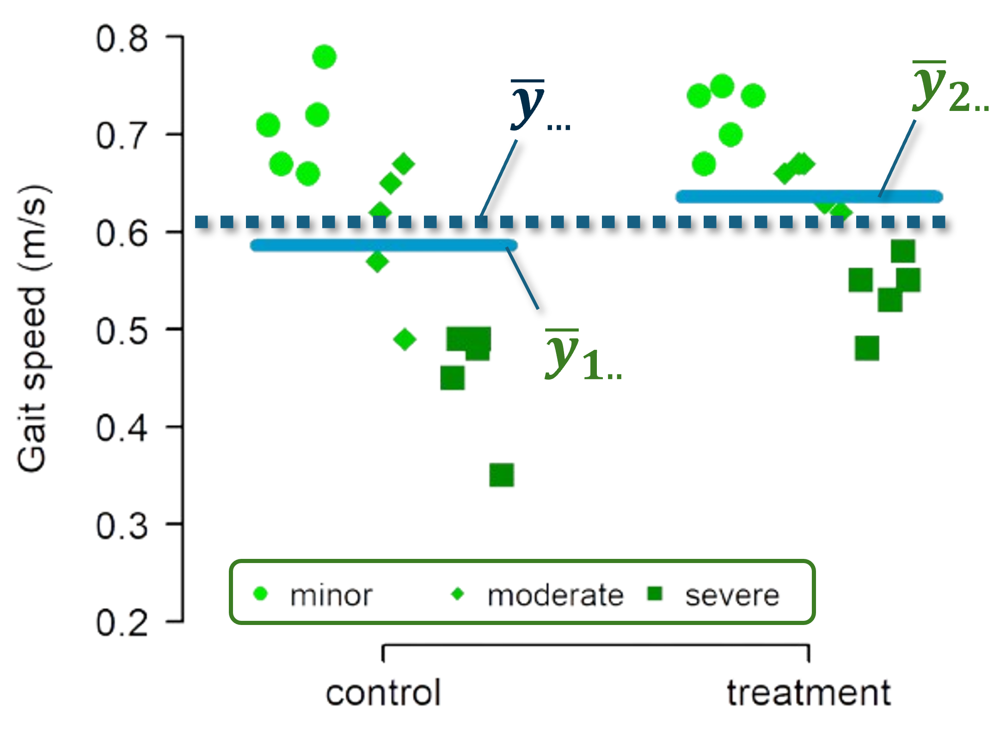
The second right-side term is the sum of squares between levels of factor \(J\) (disease severity):
\[ SS_{\text{J}} = IK \sum_{j=1}^J \left(\overline{Y}_{.j.}-\overline{Y}\right)^2 \]
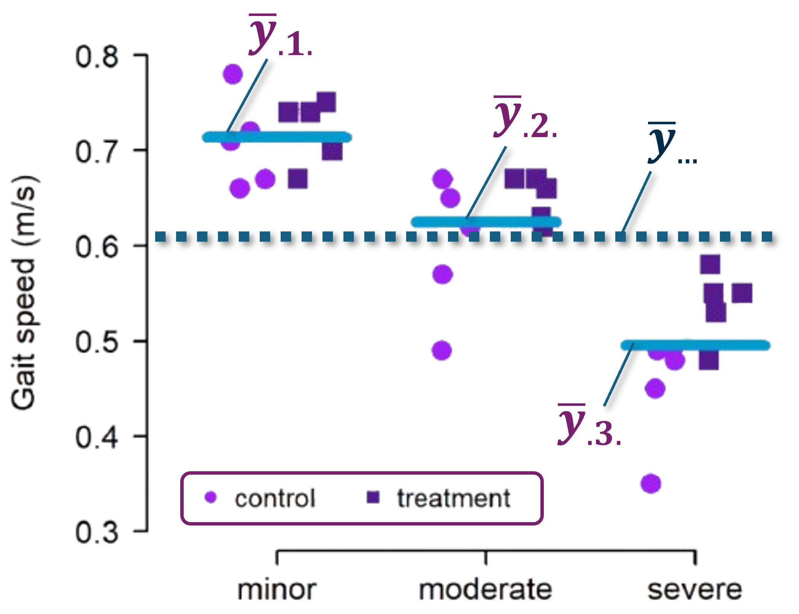
The third right-side term is the sum of squares for the interaction between factors \(I\) and \(J\) (dependence of treatment effect on disease severity):
\[ SS_{\text{IJ}} = K\sum_{i=1}^I\sum_{j=1}^J \left(\overline{Y}_{ij.}-\overline{Y}_{i..}-\overline{Y}_{.j.}+\overline{Y}\right)^2 \]
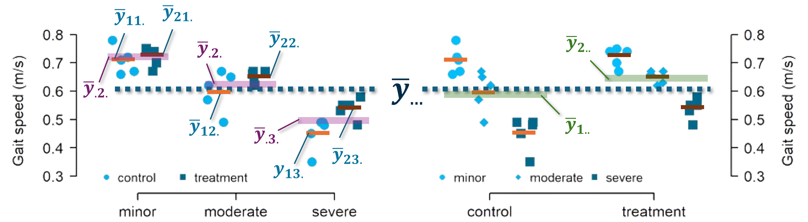
What would be an alternative approach to compute \(SS_\text{E}\)?
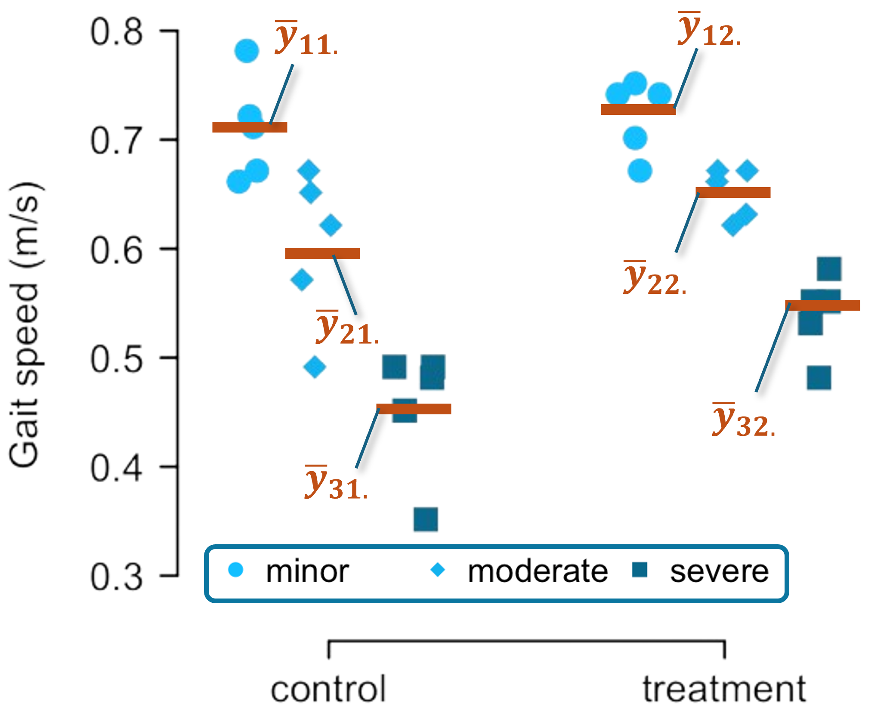
The fourth right-side term is the sum of squares of residuals (the error term):
\[ SS_{\text{E}} = \sum_{i=1}^I\sum_{j=1}^J\sum_{k=1}^K \left(Y_{ijk}-\overline{Y}_{ij.}\right)^2 \]
The Fisher (\(F\)) Test Statistic
Three null hypotheses are tested in the two-way ANOVA: the additive effects of factors \(I\) and \(J\), and their interaction.
All tests use a common denominator:
\[ SS_\text{E}/\sigma^2 \sim \chi^2_{\nu_\text{E}} \]
assuming:
\[ \varepsilon_{ijk} \sim \mathcal{N}(0,\sigma^2) \]
with:
\[ \nu_\text{E}=IJ(K-1) \]
\(H_{0I}\): No Effect of Factor \(I\)
Under the null hypothesis of no additive effect of factor \(I\):
\[ H_{0I}: \alpha_i = 0, \quad i\in\{1,\ldots,I\} \]
The corresponding \(F\) statistic is:
\[ F = \frac{SS_\text{I}/(I-1)} {SS_\text{E}/[IJ(K-1)]} = \frac{MS_\text{I}}{MS_\text{E}} \sim F(\nu_\text{I},\nu_\text{E}) \]
where \(\nu_\text{I}=I-1\) is the degrees of freedom associated with \(SS_\text{I}\).
\(H_{0J}\): No Effect of Factor \(J\)
Under the null hypothesis of no additive effect of factor \(J\):
\[ H_{0J}: \beta_j = 0, \quad j\in\{1,\ldots,J\} \]
The corresponding \(F\) statistic is:
\[ F = \frac{SS_\text{J}/(J-1)} {SS_\text{E}/[IJ(K-1)]} = \frac{MS_\text{J}}{MS_\text{E}} \sim F(\nu_\text{J},\nu_\text{E}) \]
where \(\nu_\text{J}=J-1\) is the degrees of freedom associated with \(SS_\text{J}\).
\(H_{0IJ}\): No Interaction Between Factors \(I\) and \(J\)
Under the null hypothesis of no interaction effect:
\[ H_{0IJ}: \delta_{ij}=0, \quad i\in\{1,\ldots,I\}, \quad j\in\{1,\ldots,J\} \]
The corresponding \(F\) statistic is:
\[ F = \frac{SS_\text{IJ}/[(I-1)(J-1)]} {SS_\text{E}/[IJ(K-1)]} = \frac{MS_\text{IJ}}{MS_\text{E}} \sim F(\nu_\text{IJ},\nu_\text{E}) \]
where \(\nu_\text{IJ}=(I-1)(J-1)\) is the degrees of freedom associated with \(SS_\text{IJ}\).
Two-Way ANOVA Table
The inferential procedure with two-way designs is analogous to that considered for one-way designs (see Section 14.3.5). The \(F\) values computed above for the additive and interaction effects follow Fisher distributions with their respective degrees of freedom.
As for one-way designs (Figure 14.4), an ANOVA table is typically drawn when inspecting results for two-way designs. Figure 14.14 illustrates the general ANOVA table for two-way layouts. Additional rows are included in the table, reporting the quantities necessary for computing the \(F\) values and drawing conclusions for the three null hypotheses under test.
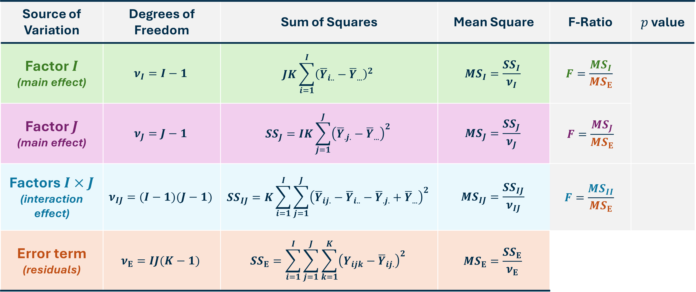
The decision to reject each null hypothesis is based on the probability of observing an \(F\) value larger than the observed value \(f\). If the \(p\)-value reported in the last column of the table (Figure 14.14)—which can be computed from the interactive plot above—is smaller than the significance level \(\alpha\), the corresponding null hypothesis is rejected.
Example of Application
The simulated data in Table 14.7, reporting gait speed for \(I=2\) groups (control and treatment) and \(J=3\) stroke conditions (minor, moderate, and severe), each with \(K=5\) subjects, yields the ANOVA table shown below.
Based on the two-way ANOVA table above for the gait speed data, which null hypotheses should be rejected?
The two-way ANOVA table above indicates a significant effect of treatment and of stroke severity. This means that gait speed is significantly different between:
- treatment and control groups, averaged across stroke-severity levels.
- minor, moderate, and severe stroke conditions, averaged across treatment groups.
The interaction effect is not significant, indicating that the treatment effect does not depend strongly on stroke severity in these simulated data.
In the absence of a significant interaction effect, post-hoc analysis (see Section 14.4) should be limited to pairwise differences between levels within each factor, without mixing levels between factors. To clarify this point, Figure 14.15 indicates which mean values should be subjected to pairwise testing.
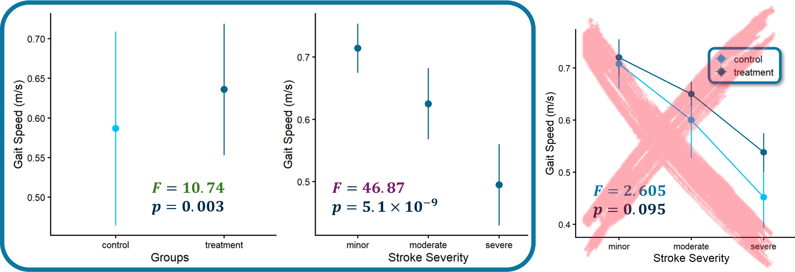
14.9 Two-Way Analysis of Variance with Mixed Effects
Inspection of the data in Table 14.7 and of the right panel in Figure 14.15 suggests that the treatment effect may depend on stroke severity. In other words, there may be an interaction between treatment and stroke severity.
In the two-way ANOVA presented above, the observations in the control and treatment groups were treated as independent. A more powerful design would test the treatment effect on the same subjects before and after the intervention. That is, subjects within each stroke-severity level would be assessed twice: before and after a period of rehabilitation.
This is a mixed design, because it combines:
- a repeated-measures factor: factor \(I\) (time: pre-post),
- a between-subjects factor: factor \(J\) (stroke severity),
- a random subject effect, with subjects nested within levels of factor \(J\).
This design is also known as a two-way ANOVA with repeated measures on one factor.
The Two-Way Model
The main difference from the two-way model presented above (Equation 14.15) is that part of the residual variability can now be attributed to stable differences between subjects. This is possible because the same subjects are measured repeatedly across the levels of factor \(I\).
One additional term, \(\gamma_{jk}\), accounts for the variability between subjects within each level of the non-repeated factor \(J\). The remaining term, \(\varepsilon_{ijk}\), represents residual error.
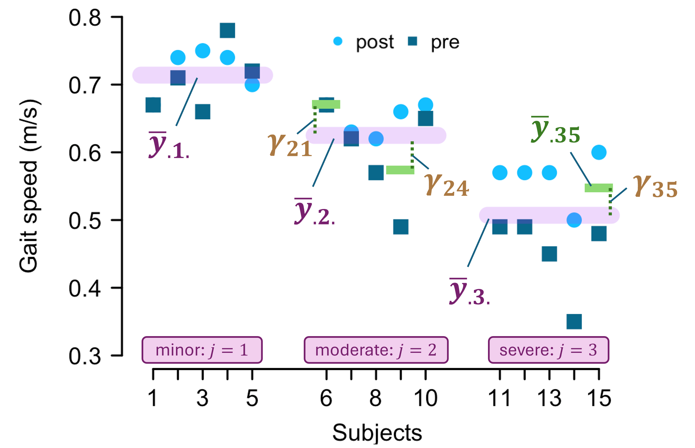
The model can therefore be written as:
\[ Y_{ijk}=\mu + \alpha_i + \beta_j + \delta_{ij} + \gamma_{jk} + \varepsilon_{ijk} \]
where:
- \(\mu\) is the grand mean.
- \(\alpha_i\) is the effect of factor \(I\) (time: pre-post).
- \(\beta_j\) is the effect of factor \(J\) (stroke severity).
- \(\delta_{ij}\) is the interaction effect between time and stroke severity.
- \(\gamma_{jk}\) is the random effect of subject \(k\) nested within level \(j\) of stroke severity.
- \(\varepsilon_{ijk}\) is the residual error.
The total sum of squares is partitioned into five terms:
\[ SS_\text{tot}=SS_\text{I}+SS_\text{J}+SS_\text{IJ}+SS_\text{JK}+SS_\text{E} \tag{14.18}\]
where \(SS_\text{JK}\) captures inter-individual variability within levels of factor \(J\):
\[ SS_\text{JK}=I \sum_{j=1}^J \sum_{k=1}^K \left(\overline{Y}_{.jk}-\overline{Y}_{.j.}\right)^2 \]
Here, \(\overline{Y}_{.jk}\) is the mean across repeated measurements for subject \(k\) within level \(j\) of stroke severity, and \(\overline{Y}_{.j.}\) is the mean across subjects and repeated measurements for level \(j\).
The residual sum of squares is:
\[ SS_\text{E}=\sum_{i=1}^I\sum_{j=1}^J\sum_{k=1}^K\left( Y_{ijk}-\overline{Y}_{ij.}-\overline{Y}_{.jk}+\overline{Y}_{.j.}\right)^2 \]
Equivalently, it can be computed from the sum-of-squares identity: \(SS_\text{E}=SS_\text{tot}-SS_\text{I}-SS_\text{J}-SS_\text{IJ}-SS_\text{JK}\)
NoteError terms in the mixed design
The mixed design has two error terms. The effect of the between-subjects factor \(J\) is tested against the subject-within-\(J\) variability, \(MS_\text{JK}\). The repeated-measures factor \(I\) and the interaction \(I \times J\) are tested against the residual error, \(MS_\text{E}\).
Two-Way ANOVA Table with Mixed Effects
Because the variability between subjects is separated from the residual error, the denominator of the \(F\) ratio depends on which effect is being tested. Compare the ANOVA table below, for the mixed design (Table 14.9), with that obtained for the same data set when all effects were treated as fixed and independent (Table 14.8).
The \(p\)-values change because the sources of variability are partitioned differently. In particular, the interaction effect is now statistically significant, since its \(p\)-value is smaller than the significance level \(\alpha=0.05\). This indicates that the treatment effect depends on stroke severity.
Interpreting Two-Way ANOVA Results with a Significant Interaction Effect
The mixed-design ANOVA indicates a main effect of factor \(I\) (time: pre-post; see Table 14.9). Since the time factor has two levels, this main effect suggests a difference in gait speed between pre- and post-intervention measurements when averaging across stroke-severity levels.
However, this additive effect should not be interpreted in isolation, because the interaction between factor \(I\) and factor \(J\) is statistically significant. This means that the pre-post change in gait speed depends on stroke severity.
ImportantAdditive \(\times\) interaction effects
Statistically significant additive effects should be interpreted with caution when interaction effects are statistically significant. In this case, the effect of one factor depends on the level of the other factor.
In the presence of an interaction, pairwise differences should be assessed within levels of one of the factors. Given the interest in assessing the effect of the rehabilitation program, pre-post differences should be assessed separately within each stroke-severity level.
For the three possible pre-post comparisons, based on the Tukey HSD post-hoc test (see Section 14.4.2), a statistically significant difference is observed only for the severely affected subjects (Figure 14.16).
Symbols such as \(*\), \(\#\), or letters, are often used to indicate where pairwise differences are statistically significant, yielding a \(p\)-value smaller than the significance level \(\alpha\).
In this example, the pre-post difference was significant only for the severely affected patients. This indicates that the treatment benefit was most evident in this subgroup.
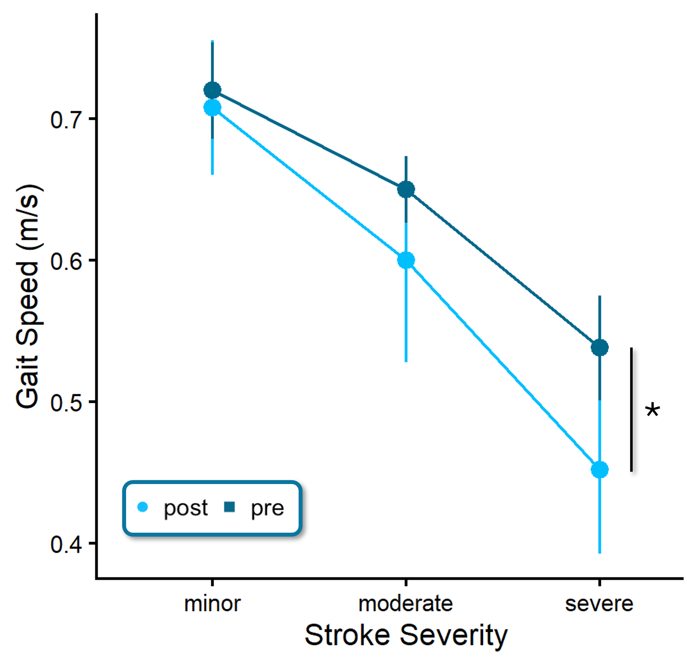
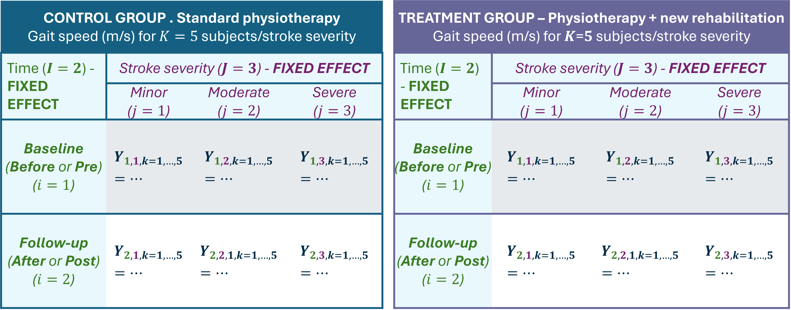
This figure illustrates an even more complex design, including a control group receiving only standard physiotherapy. The treatment group receives both the standard care and the new intervention.
Which ANOVA Layout is this?
How could this design be modified to be more ethically viable?
14.10 Unbalanced ANOVA Designs
So far, only situations in which the number of observations was the same across factor levels were considered. This may not be the case in some studies.
For example, subjects may drop out after enrollment, resulting in fewer observations at follow-up assessments. Issues with signal quality or limited availability of resources may also lead to unequal numbers of observations across factor-level combinations. When this occurs in an ANOVA design, the design is said to be unbalanced.
The Problem with Unbalanced Designs
With unbalanced designs, the ANOVA model does not necessarily change. What changes is how the model parameters and sums of squares are estimated.
Based on the linear two-way ANOVA model presented above (Equation 14.15), the expected value for observations in the \(i\)-th level of factor \(I\) and the \(j\)-th level of factor \(J\) is:
\[ \hat{Y}_{ij}=\hat{\mu}+\hat{\alpha}_i+\hat{\beta}_j+\hat{\delta}_{ij} \]
where all terms on the right side are estimates of the model parameters.
NoteLeast-squares estimates of parameters for balanced designs
No derivation has been provided so far for the parameter estimates. For the interested reader, parameters can be estimated in the least-squares sense.
Let us define the quadratic error function:
\[ \theta=\sum_{i,j,k}\left(Y_{ijk}-\hat{Y}_{ij}\right)^2=\sum_{i,j,k} \left(Y_{ijk}-\mu-\alpha_i-\beta_j-\delta_{ij}\right)^2 \]
Parameters are estimated by choosing values of \(\mu\), \(\alpha_i\), \(\beta_j\), and \(\delta_{ij}\) that minimize \(\theta\). In the least-squares sense, this means solving:
\[ \frac{\partial \theta}{\partial \mu} =\frac{\partial \theta}{\partial \alpha_i} =\frac{\partial \theta}{\partial \beta_j} =\frac{\partial \theta}{\partial \delta_{ij}}=0 \]
Considering, for example, the effect \(\alpha_i\):
\[ \frac{\partial \theta}{\partial \alpha_i} =-2 \sum_{j,k}\left(Y_{ijk}-\mu-\alpha_i-\beta_j-\delta_{ij}\right) \]
we obtain:
\[ \begin{aligned} &\sum_{j,k} \left(Y_{ijk}-\mu-\alpha_i-\beta_j-\delta_{ij}\right)=0 \\ &\Rightarrow K\left(\sum_j \overline{Y}_{ij.}-\sum_j\mu- \sum_j\alpha_i-\sum_j\beta_j-\sum_j\delta_{ij}\right)=0 \\ &\Rightarrow K\left(\sum_j \overline{Y}_{ij.}-J\mu-J\alpha_i\right)=0 \\ &\Rightarrow \overline{Y}_{i..}-\mu-\alpha_i=0 \end{aligned} \]
The estimated parameter is therefore:
\[ \hat{\alpha}_i = \overline{Y}_{i..}-\hat{\mu} = \overline{Y}_{i..}-\overline{Y} \]
Analogously, for a balanced design:
\[ \begin{aligned} \hat{\mu} &= \overline{Y} \\ \hat{\beta}_j &= \overline{Y}_{.j.}-\overline{Y} \\ \hat{\delta}_{ij} &= \overline{Y}_{ij.}-\overline{Y}_{i..}-\overline{Y}_{.j.}+\overline{Y} \end{aligned} \]
Given the constraints for each parameter of the model (Equation 14.16), and assuming a fixed number of \(K\) observations per cell (balanced design), the effect of factor \(I\) can be estimated as:
\[ \begin{aligned} \hat{\alpha}_i &= \frac{1}{JK} \sum_{j,k} \left(Y_{ijk}-\mu-\beta_j-\delta_{ij}\right) \\ &= \frac{1}{J} \left[ \sum_j \overline{Y}_{ij.} - \sum_j \mu - \sum_j \beta_j - \sum_j \delta_{ij} \right] \\ &= \frac{1}{J} \left[ \sum_j \overline{Y}_{ij.} - J\mu \right] \\ &= \overline{Y}_{i..}-\mu \\ &= \overline{Y}_{i..}-\overline{Y} \end{aligned} \]
This identity does not generally hold when the number of observations differs across factor-level combinations (unbalanced design). Denoting by \(n_{ij}\) the number of observations collected for the combination of levels \(i\) and \(j\), the least-squares normal equation for \(\alpha_i\) becomes:
\[ \begin{aligned} &\sum_{j,k} \left(Y_{ijk}-\mu-\alpha_i-\beta_j-\delta_{ij}\right)=0 \\ &\Rightarrow \sum_j n_{ij}\overline{Y}_{ij.} - \sum_j n_{ij}\mu - \sum_j n_{ij} \left(\alpha_i+\beta_j+\delta_{ij}\right)=0 \end{aligned} \]
Because \(n_{ij}\) differs between cells, the contribution of factor \(I\) cannot be separated from the contributions of factor \(J\) and the interaction in the same simple way as in the balanced design. The model is therefore fitted numerically, usually through the general linear model framework.
ImportantWhy unbalanced designs are more difficult
In balanced designs, the effects of the factors are orthogonal: each effect can be estimated independently from the others. In unbalanced designs, this orthogonality is lost. As a result, sums of squares and parameter estimates depend on how the model is specified and on the order or type of sums of squares used.
Inferential Procedure with Unbalanced Designs
The main difficulty with unbalanced designs is that the effects of the different factors cannot be isolated as straightforwardly as in balanced designs. To illustrate the problem, let us consider a simplified version of the gait-speed example.
Table 14.10 reports gait-speed values measured from two groups of subjects with either minor or severe stroke disease. The design is unbalanced because the number of subjects with minor and severe stroke differs between groups.
Based on the values reported here, there are two possible approaches for computing the mean gait speed for the control group:
weighting the cell means according to the number of observations in each cell. The resulting mean is \(\overline{Y}_{1..}=0.593\ \text{m/s}\).
averaging the cell means without weighting them according to the number of observations. The resulting mean is \(\overline{Y}_{1..}=0.545\ \text{m/s}\).
The interpretation of the contribution of factor \(I\) to the model changes depending on how this group mean is computed.
For the weighted mean, the imbalance across levels of factor \(J\) is not adjusted for. Differences between control and treatment groups are therefore assessed directly from the observed marginal means.
For the unweighted mean, the effect of factor \(J\) is controlled for. In this case, the treatment effect is assessed after accounting for differences in stroke severity. These unweighted means are also known as estimated marginal means or least-square means.
To clarify this point, consider the weighted and unweighted means shown in Figure 14.17 for the control group. The weighted mean is larger because the control group contains more subjects with minor stroke severity, who tend to exhibit higher gait-speed values.
Consequently, the weighted mean is pulled toward the larger gait speeds observed in the minor-stroke subgroup. The observed difference between treatment groups may therefore partly reflect the imbalance in stroke severity rather than a genuine treatment effect.
In biomedical research, it is often important to assess the effect of one factor after controlling for the effects of the other factors included in the model. In some situations, however, one may deliberately choose to ignore the contribution of another factor, for example when factors are introduced sequentially according to a specific experimental rationale.
These different inferential goals lead to different approaches for computing the sums of squares in unbalanced ANOVA designs.
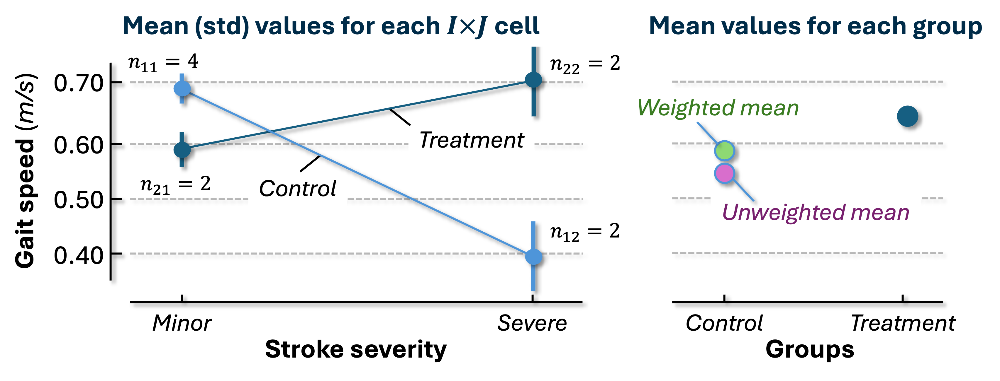
Type I, Type II, and Type III Sums of Squares
In balanced ANOVA designs, the effects of different factors are orthogonal. This means that the contribution of one factor to the total variability can be separated independently from the contribution of the other factors.
In unbalanced designs, however, factor effects become partially confounded because the number of observations differs across cells. Consequently, the sum of squares attributed to one factor depends on how the other factors are handled in the model.
Three main approaches are commonly used: Type I, Type II, and Type III sums of squares.
NoteWhich type of sum of squares should be used?
There is no universally correct type of sum of squares for all unbalanced designs. The choice depends on the scientific question and should be defined before inspecting the results.
Type I sums of squares are also called sequential sums of squares because effects are tested in the order in which they enter the model.
The procedure is based on comparing residual sums of squares from nested models. For example, if factor \(I\) is entered before factor \(J\), the sequence is:
\[ \begin{aligned} SS_\text{E} &= \sum_{i,j,k}\left(Y_{ijk}-\mu\right)^2 \\ SS_\text{E}(I) &= \sum_{i,j,k}\left(Y_{ijk}-\mu'-\alpha_i\right)^2 \\ SS_\text{E}(I,J) &= \sum_{i,j,k}\left(Y_{ijk}-\mu'-\alpha_i-\beta_j\right)^2 \\ SS_\text{E}(I,J,IJ) &= \sum_{i,j,k}\left(Y_{ijk}-\mu'-\alpha_i-\beta_j-\delta_{ij}\right)^2 \end{aligned} \]
The sums of squares are then computed as reductions in residual variability:
\[ \begin{aligned} SS_I &= SS_\text{E} - SS_\text{E}(I) \\ SS_{J|I} &= SS_\text{E}(I)-SS_\text{E}(I,J) \\ SS_{IJ|I,J} &= SS_\text{E}(I,J)-SS_\text{E}(I,J,IJ) \end{aligned} \]
This means that the first factor entered into the model receives credit for any variability shared with the other factors. Therefore, changing the order of the factors may change the sums of squares, the \(F\) statistics, and the \(p\)-values.
Type I sums of squares are useful when the order of entry has a clear scientific meaning. For example, a researcher may decide to first enter a confounding variable and then test whether a treatment explains additional variability.
ImportantPractical interpretation of Type I sums of squares
Type I sums of squares answer sequential questions. For example: after ignoring disease severity initially, does treatment explain variability? Then, after treatment has been included, does disease severity explain additional variability?
Type II sums of squares evaluate each main effect after controlling for the other main effects, but without including the interaction in the test of the main effects.
For the two-way model, the main-effect sums of squares are obtained by comparing models as follows:
\[ \begin{aligned} SS_I^{II} &= SS_\text{E}(J)-SS_\text{E}(I,J) \\ SS_J^{II} &= SS_\text{E}(I)-SS_\text{E}(I,J) \end{aligned} \]
Thus, factor \(I\) is tested after accounting for factor \(J\), and factor \(J\) is tested after accounting for factor \(I\).
This approach is appropriate when the interaction effect is absent or not part of the scientific question. If a meaningful interaction is expected, Type II sums of squares may be misleading because the additive effects are interpreted without accounting for the interaction.
ImportantPractical interpretation of Type II sums of squares
Type II sums of squares answer controlled additive questions. For example: after accounting for stroke severity, is there a treatment effect? This approach is most appropriate when interaction effects are not expected or are negligible.
Type III sums of squares evaluate each effect after controlling for all other effects in the model, including interactions.
For the two-way model, the main-effect sums of squares are obtained by comparing models as follows:
\[ \begin{aligned} SS_I^{III} &= SS_\text{E}(J,IJ)-SS_\text{E}(I,J,IJ) \\ SS_J^{III} &= SS_\text{E}(I,IJ)-SS_\text{E}(I,J,IJ) \\ SS_{IJ}^{III} &= SS_{IJ\mid I,J} \end{aligned} \] Because the interaction effect is entered after both main effects in the full model, the interaction sum of squares is identical for Type I and Type III approaches.
Type III sums of squares therefore assess the unique contribution of each factor after all other terms in the model have been considered.
This is the most common approach in biomedical research and in many statistical software packages, especially when designs are unbalanced and interactions are included in the model.
The logic of Type III sums of squares is closely related to the unweighted means shown in Figure 14.17. The goal is to estimate the contribution of one factor independently from the imbalance associated with the other factors.
ImportantPractical interpretation of Type III sums of squares
Type III sums of squares answer fully adjusted questions. For example: is there a treatment effect after accounting for stroke severity and for the treatment \(\times\) severity interaction? This approach is often preferred when interaction effects are part of the model.
Conducting the Analysis in Practice
The practical steps for conducting ANOVA with unbalanced designs depend on the type of sums of squares selected.
- Define the order in which factors enter the model based on the scientific question.
- Fit the simplest model, including only the grand mean.
- Add factor \(I\) and compute the reduction in residual sum of squares.
- Add factor \(J\) and compute the additional reduction in residual sum of squares.
- Add the interaction \(I\times J\) and compute the additional reduction in residual sum of squares.
- Use each reduction in residual sum of squares to compute the corresponding mean square, \(F\) statistic, and \(p\)-value.
The result depends on the order in which factors are entered. Therefore, the order must be justified scientifically.
- Fit the additive model containing both factors but no interaction:
\[ Y_{ijk}=\mu+\alpha_i+\beta_j+\varepsilon_{ijk} \]
- Test factor \(I\) after accounting for factor \(J\).
- Test factor \(J\) after accounting for factor \(I\).
- If necessary, inspect or separately test whether an interaction effect is present.
- Interpret the main effects only if the interaction is absent or not meaningful for the scientific question.
Type II sums of squares are therefore most useful when the primary interest lies in additive effects.
- Fit the full model, including both main effects and the interaction:
\[ Y_{ijk}=\mu+\alpha_i+\beta_j+\delta_{ij}+\varepsilon_{ijk} \]
- Test factor \(I\) after accounting for factor \(J\) and the interaction \(I\times J\).
- Test factor \(J\) after accounting for factor \(I\) and the interaction \(I\times J\).
- Test the interaction effect after accounting for both main effects.
- If the interaction is significant, interpret the main effects with caution and proceed to simple effects or post-hoc comparisons within levels of one factor.
Type III sums of squares are often preferred when the model includes interaction terms and the design is unbalanced.
Interpreting Different ANOVA Tables
Because the sums of squares are computed differently, Type I, Type II, and Type III approaches may lead to different \(F\) statistics and different \(p\)-values.
This does not mean that one result is automatically correct and the others are incorrect. Instead, each approach answers a different inferential question:
- Type I asks whether each factor explains additional variability given the factors entered before it.
- Type II asks whether each main effect explains variability after the other main effects have been considered.
- Type III asks whether each effect explains variability after all other effects in the model have been considered.
ImportantPractical recommendation
For biomedical applications, Type II and Type III sums of squares are usually more relevant than Type I. Type II is useful when interaction effects are not expected. Type III is often preferred when interaction effects are included in the model or when the goal is to assess fully adjusted effects.
In the example shown in Figure 14.17, the mean lines are not parallel, suggesting a possible interaction between treatment and stroke severity. In this situation, Type III sums of squares are generally the most appropriate choice because they assess each effect after accounting for the interaction.